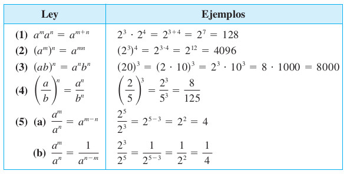

Capítulo 6 Potenciación y Radicales
Podcast
6.1 Definición de potenciación
Definición3.1 Dados un número real \(a\) y un número entero positivo \(n\), se define la potenciación \(a^n\) como el producto de \(n\) factores iguales a \(a\), es decir: \[a^n = \underbrace{a \cdot a \cdot \ldots \cdot a}_{n \text{ veces}}\] al número \(a\) se le llama base y a \(n\) se le llama exponente.
Podcast explicativo
6.2 Propiedades potenciación

Figura 6.1: Propiedades de la potenciación [Imagen tomada de (swokowski1996algebra?) pág \(20\)]
Proposición6.1 Sean \(a\) y \(b\) números reales y \(m,n\) enteros. Entonces se cumplen las siguientes propiedades de la potenciación:
\(a^n b^n=(ab)^n\)
\((a^n)^m=a^{nm}\)
\((a^n)^m=a^{nm}\)
\((2^1)^{3}=2^{(1)(3)}=2^3\)
\(\left( \dfrac{a}{b} \right)^n=\frac{a^n}{b^n}\)
\(a^{-n}=\dfrac{1}{a^n}\)
\(\left( \dfrac{a}{b} \right)^{-n}=\left( \dfrac{b}{a} \right)^{n}\)
\(1^n=1\)
\((-1)^n=1, \text{ siempre que n sea par}\)
Ejemplo: \((-1)^2=1\)
Ejemplo: \((-1)^4=1\)
Ejemplo: \((-1)^6=1\)
- \((-1)^n=-1, \text{ siempre que n sea impar}\)
Ejemplo: \((-1)^1=-1\)
Ejemplo: \((-1)^3=-1\)
Ejemplo: \((-1)^5=-1\)
Ejemplo: \((-1)^7=-1\)
- \(a^0=1, \text{ siempre que } a\neq 0\)
Ejemplo: \((1)^0=1\)
Ejemplo: \((-1)^0=1\)
Ejemplo: \((3)^0=1\)
Ejemplo: \((5)^0=1\)
- \(0^0=\text{indeterminado}=IND\)
Podcast Propiedades de Potenciación
Podcast explicativo
Dados un número real \(a\) y un número entero positivo \(n\), se define el radical \(\sqrt[n]{a}\) como el número real \(b\) tal que \(b^n=a\), es decir: \[\sqrt[n]{a}=b \quad \text{si y sólo si} \quad b^n=a\] Al número \(n\) se le llama índice y al número \(a\) se le llama radicando.
## Propiedades de radicales
<div class="figure" style="text-align: center">
<img src="images/PropiedadesDeRadicales1.jpg" alt="Propiedades de los radicales [Imagen tomada de [@swokowski1996algebra] pág $24$]" />
<p class="caption">(\#fig:FigRadicales1)Propiedades de los radicales [Imagen tomada de [@swokowski1996algebra] pág $24$]</p>
</div>
::: {.proposition #prop-radicales}
Sean $a$ y $b$ números reales y $m,n$ enteros positivos. Entonces se cumplen las siguientes propiedades de los radicales, siempre que las expresiones estén definidas:
(1) $\sqrt[n]{a \cdot b}=\sqrt[n]{a} \cdot \sqrt[n]{b}$
(2) $\sqrt[m]{\sqrt[n]{a}}=\sqrt[n \cdot m]{a}$
(3) $\sqrt[n]{\dfrac{a}{b} }=\dfrac{\sqrt[n]{a}}{\sqrt[n]{b}}$
(4) $\sqrt[n]{a}=a^{\frac{1}{n}}$
(5) $\sqrt[n]{1}=1$
(6) Si $n$ es par, $\sqrt[n]{-1}$ no es un número real.
(7) Si $n$ es impar, $\sqrt[n]{-1}=-1$.
:::
**Podcast explicativo**
<audio controls style="width:100%;max-width:600px;">
<source src="podcasts/bloques/02-Potenciacion-y-radicales_prop-radicales.mp3" type="audio/mpeg">
</audio>
(1) $\sqrt[n]{a.b}=\sqrt[n]{a}.\sqrt[n]{b}$
(2) $\sqrt[m]{\sqrt[n]{a}}=\sqrt[n.m]{a}$
(3) $\sqrt[n]{\dfrac{a}{b} }=\frac{\sqrt[n]{a}}{\sqrt[n]{b}}$
(4) $\sqrt[n]{a}=a^{\frac{1}{n}}$
(5) $\sqrt[n]{1}=1$
(6)$\sqrt[n]{-1}=\text{ es un número complejo si n es par}$
NOTA: $\sqrt{-1}=i$ Unidad imaginaría
Ejemplo: $\sqrt[4]{-1}=\sqrt[2]{\sqrt[2]{-1}}=\sqrt[2]{i}$
Ejemplo: $\sqrt[6]{-1}=\sqrt[3]{\sqrt[2]{-1}}=\sqrt[3]{i}$
(7) $\sqrt[n]{-1}=-1, \text{ si el número n es impar}$
Ejemplo: $\sqrt[3]{-1}=-1$
Ejemplo: $\sqrt[5]{-1}=-1$
Ejemplo: $\sqrt[6]{-2}=\sqrt[3]{\sqrt[2]{-2}}=\sqrt[3]{\sqrt[2]{(-1)2}}=\sqrt[3]{\sqrt[2]{-1}\sqrt[2]{2}}=\sqrt[3]{i\sqrt[2]{2}}$
**Podcast**
[Propiedades de los Radicales](https://soundcloud.com/john-estrada-920356121/propiedadesdelosradicales)
## Ejemplo (ejercicio del taller)
Simplificar $\left(-8 \right)^{\frac{1}{3}}$
**Proceso de solución:**
(1) Sabemos que $8=2^3$ y $-x=(-1)x$
(2) $\left(-8 \right)^{\frac{1}{3}}=\left(-2^3 \right)^{\frac{1}{3}}$
aclaración $-2^3=(-1)(2^3)$
aclaración $\left(-2^3\right)=(-1)^3.(2)^3=((-1).2)^3$
aclaración $\left(-2^3\right)=\left(-2\right)^3$
(*) $\left(-8 \right)^{\frac{1}{3}}=\left((-1)^3.2^3 \right)^{\frac{1}{3}}=\left(((-1).2)^3 \right)^{\frac{1}{3}}$
(3) $\left(-8 \right)^{\frac{1}{3}}=\left(-2 \right)^{\frac{3}{3}}$
(4) $\left(-8 \right)^{\frac{1}{3}}=\left(-2 \right)^1$
(5) $\left(-8 \right)^{\frac{1}{3}}=-2$
## Ejemplo (ejercicio del taller)
Simplificar $\left(-32 \right)^{\frac{1}{5}}=\sqrt[5]{-32}$
**Proceso de solución:**
(1) Sabemos que $32=2^5$ y $-x=(-1)x$
(2) $\left(-32 \right)^{\frac{1}{5}}=\left(-2^5 \right)^{\frac{1}{5}}$
aclaración $-2^5=(-1)(2^5)$
aclaración $\left(-2^5\right)=(-1)^5.(2)^5$
aclaración $\left(-2^5\right)=\left(-2\right)^5$
(*) $\left(-32 \right)^{\frac{1}{5}}=\left((-1)^5.2^5 \right)^{\frac{1}{5}}$
$\left(-32 \right)^{\frac{1}{5}}=\left(-2 \right)^{\frac{5}{5}}$
(3) $\left(-32 \right)^{\frac{1}{5}}=\left(-2 \right)^{\frac{5}{5}}$
(4) $\left(-32 \right)^{\frac{1}{5}}=\left(-2 \right)^1$
(5) $\left(-32 \right)^{\frac{1}{5}}=-2$
## Ejemplo
Simplificar
$$
\dfrac{2.2^{3n}-4.4^{n}}{{(2.2^{n})}^3-8.2^{2n+1}}
$$
Proceso de solución
Sabemos que $4=2^2$ y que $8=2^3$
Entonces debemos sustituir estas dos igualdades en la expresión a simplifcar como sigue:
(1) $\dfrac{2.2^{3n}-2^2.{(2^2)}^{n}}{{(2.2^{n})}^3-2^3.2^{2n+1}}$
(2) $\dfrac{2.2^{3n}-2^2.{(2^2)}^{n}}{{(2.2^{n})}^3-2^3.2^{2n+1}}$
aclaración $2^{2n+1}=2^{2n}.2^1$
(3) $\dfrac{2.2^{3n}-2.2.{(2^{2n})}}{2^3.2^{3n}-2^3.2^{2n}.2^{1}}$
aclaración $2^{3n}=2^{2n}.2^n$
(4) $\dfrac{2.2^{2n}.2^{n}-2.{2^{2n}.2}}{2^3.2^{2n}.2^{n}-2^3.2^{2n}.2^{1}}$
(5) $\dfrac{2.2^{2n}(2^{n}-2)}{2^3.2^{2n}(2^n-2)}$
(6) $\dfrac{2.2^{2n}}{2^3.2^{2n}}$
(7) $\dfrac{2}{2^3}$
(8) $\dfrac{1}{2^2}$
(9) $\dfrac{1}{4}$
<br></br>
### Actividad Geogebra: Potencias y raíces de fracciones
Author: Javier Cayetano Rodríguez
<iframe scrolling="no" title="Practica" src="https://www.geogebra.org/material/iframe/id/tz3pn2ad/width/602/height/440/border/888888/sfsb/true/smb/false/stb/false/stbh/false/ai/false/asb/false/sri/false/rc/false/ld/false/sdz/false/ctl/false" width="602px" height="440px" style="border:0px;"> </iframe>
<br></br>
### Actividad Geogebra: Propiedades de las potencias
Author: Javier Cayetano Rodríguez
<iframe scrolling="no" title="Propiedades de las potencias (fácil)" src="https://www.geogebra.org/material/iframe/id/sr7wanbc/width/675/height/417/border/888888/sfsb/true/smb/false/stb/false/stbh/false/ai/false/asb/false/sri/false/rc/false/ld/false/sdz/false/ctl/false" width="675px" height="417px" style="border:0px;"> </iframe>
<br></br>
## Ley distributiva
::: {.theorem #ley-distributiva}
Sean $a$, $b$ y $c$ números reales. Entonces se cumple la **ley distributiva**:
$$a(b+c)=ab+ac$$
También se cumple la forma derecha:
$$(b+c)a=ba+ca$$
:::
**Podcast explicativo**
<audio controls style="width:100%;max-width:600px;">
<source src="podcasts/bloques/02-Potenciacion-y-radicales_ley-distributiva.mp3" type="audio/mpeg">
</audio>
<div class="figure" style="text-align: center">
<img src="images/GraficaLeyDistributiva1.jpg" alt="Grafica ley distributiva [Imagen tomada de [@swokowski1996algebra] pág $17$]" />
<p class="caption">(\#fig:LeyDist1)Grafica ley distributiva [Imagen tomada de [@swokowski1996algebra] pág $17$]</p>
</div>
$$\left(b+c \right)a=ba+ca$$
$$a\left(b+c \right) =ab+ac$$
## Ejemplos ley distributiva
Realizar el producto de la siguiente expresión
$$\left( ax+b\right) \left(cx+d \right)=ax.cx+ax.d+b.cx+b.d $$
$$\left( ax+b\right) \left(cx+d \right)=acx^2+(ad+bc)x+bd $$
<!--chapter:end:02-Potenciacion-y-radicales.Rmd-->
# Solución de Ecuaciones {#SolucionDeEcuaciones}
**Podcast**
<audio controls>
<source src="podcasts/cap03_ecuaciones.mp3" type="audio/mpeg">
</audio>
## Definición de ecuación
::: {.definition #unnamed-chunk-1}
Una **ecuación** es una igualdad matemática entre dos expresiones algebraicas, llamadas miembros, en la que aparecen una o más incógnitas. Una **solución** de la ecuación es un valor de la incógnita que hace verdadera la igualdad.
:::
**Podcast explicativo**
<audio controls style="width:100%;max-width:600px;">
<source src="podcasts/bloques/03-SolucionDeEcuaciones_definition1.mp3" type="audio/mpeg">
</audio>
## Propiedades de las ecuaciones
::: {.theorem #propiedades-ecuaciones}
Si $A=B$ es una ecuación, entonces se cumplen las siguientes propiedades:
(1) Si se suma o resta un mismo número a ambos lados de la igualdad, la igualdad se mantiene.
(2) Si se multiplica o divide por un mismo número distinto de cero en ambos lados de la igualdad, la igualdad se mantiene.
(3) Si se eleva a una potencia distinta de cero ambos miembros de la igualdad, la igualdad se mantiene.
(4) Si se extrae la misma raíz en ambos lados de la igualdad, la igualdad se mantiene.
:::
**Podcast explicativo**
<audio controls style="width:100%;max-width:600px;">
<source src="podcasts/bloques/03-SolucionDeEcuaciones_propiedades-ecuaciones.mp3" type="audio/mpeg">
</audio>
## Ley distributiva
::: {.theorem #ley-distributiva-cap3}
Sean $a$, $b$ y $c$ números reales. Entonces se cumple la **ley distributiva**:
$$a(b+c)=ab+ac$$
También se cumple la forma derecha:
$$(b+c)a=ba+ca$$
:::
**Podcast explicativo**
<audio controls style="width:100%;max-width:600px;">
<source src="podcasts/bloques/03-SolucionDeEcuaciones_ley-distributiva-cap3.mp3" type="audio/mpeg">
</audio>
<div class="figure" style="text-align: center">
<img src="images/GraficaLeyDistributiva1.jpg" alt="Grafica ley distributiva [Imagen tomada de [@swokowski1996algebra] pág $17$]" />
<p class="caption">(\#fig:LeyDist1)Grafica ley distributiva [Imagen tomada de [@swokowski1996algebra] pág $17$]</p>
</div>
$$\left(b+c \right)a=ba+ca \ \ \ \ \text{la } a \text{ se distribuye a derecha del factor } \ \ (b+c)$$
$$a\left(b+c \right) =ab+ac \ \ \ \ \text{la } a \text{ se distribuye a izquierda del factor } \ \ (b+c)$$
## Factorización (Tema1)
::: {.definition #def-factorizacion}
La **factorización** es el proceso de expresar un polinomio como un producto de polinomios de menor grado, llamados factores, de tal forma que la expresión resultante sea equivalente a la original.
:::
**Podcast explicativo**
<audio controls style="width:100%;max-width:600px;">
<source src="podcasts/bloques/03-SolucionDeEcuaciones_def-factorizacion.mp3" type="audio/mpeg">
</audio>
**Podcast**
[Definición de que es factorizar](https://soundcloud.com/john-estrada-920356121/factorizacion1)
### Ejemplo1 (F.C. letra)
Factorizar la expresión
$$
3x^2+xy
$$
\begin{equation} \label{eq14}
\begin{split}
3x^2+xy & = 3.x.x+x.y\\
& = x(3x+y) \ \ \ \bf{\text{Respuesta esperada}}
\end{split}
\end{equation}
### Ejemplo2 (F.C. letra)
Factorizar la expresión
$$
1x^2y^3+x^3y^5
$$
\begin{equation} \label{eq15}
\begin{split}
x^2y^3+x^3y^5 & =1.x^2.y^3+x^2.x.y^3.y^2 \\
& =1.x^2.y^3+x^2.y^3.x.y^2 \\
& = x^2y^3(1+xy^2) \ \ \ \bf{\text{Respuesta esperada}}
\end{split}
\end{equation}
### Ejemplo3 (F.C. número)
Factorizar la expresión
$$
12x^2y+4w^3z^3
$$
\begin{equation} \label{eq16}
\begin{split}
12x^2y+4w^3z^3 & = \\
(3).(4).x^2.y+(4).w^2.w.z^3 & = 4(3x^2y+w^3z^3) \ \ \ \bf{\text{Respuesta esperada}}
\end{split}
\end{equation}
### Ejemplo4 (F.C. número y letra)
Factorizar la expresión
$$
16w^2y+4w^3x^3
$$
\begin{equation} \label{eq17}
\begin{split}
16w^2y+4w^3x^3 & = \\
(4).(4).w^2.y+(4)w^2.w.x^3 & = 4w^2(4y+wx^3) \ \ \ \bf{\text{Respuesta esperada}}
\end{split}
\end{equation}
### Ejemplo5 (F.C. por agrupación)
Factorizar la expresión
$$
2uv-5wz+2uz-5wv
$$
\begin{equation} \label{eq18}
\begin{split}
2uv-5wz+2uz-5wv & = (2uv+2uz)+(-5wz-5wv) \\
& = 2u.(v+z)-5w.(z+v) \\
& = 2u.(v+z)-5w.(v+z) \\
& = (2u-5w).(v+z) \ \ \ \bf{\text{Respuesta esperada}}
\end{split}
\end{equation}
### Ejemplo6 (F.C. por agrupación)
Factorizar la expresión
$$
2p^3-p^2+2p-1
$$
\begin{equation} \label{eq19}
\begin{split}
2p^2.p-p^2+2p-1 & = (2p^3-p^2)+(2p-1) \\
& = p^2.(2p-1)+1.(2p-1) \\
& = (p^2+1).(2p-1) \ \ \ \bf{\text{Respuesta esperada}}
\end{split}
\end{equation}
### Factorizar $x^2+Bx+C$
$$
x^2+Bx+C=(x+a)(x+b)
$$
#### Ejemplo 1
Factorizar $x^2+7x+10$
<div class="figure" style="text-align: center">
<img src="images/Factorizacion1.jpg" alt="Factorización ejemplo 1 [Imagen tomada de [@sullivan2006algebra] pág $46$]" />
<p class="caption">(\#fig:Factorizacion1)Factorización ejemplo 1 [Imagen tomada de [@sullivan2006algebra] pág $46$]</p>
</div>
**Solución**:
La factorización de la expresión cuadrática $x^2+7x+10$ es:
$$
x^2+7x+10=(x+2)(x+5)
$$
#### Ejemplo 2
Factorizar $x^2-6x+8$
<div class="figure" style="text-align: center">
<img src="images/Factorizacion2.jpg" alt="Factorización ejemplo 2 [Imagen tomada de [@sullivan2006algebra] pág $46y47$]" />
<p class="caption">(\#fig:Factorizacion2)Factorización ejemplo 2 [Imagen tomada de [@sullivan2006algebra] pág $46y47$]</p>
</div>
**Solución**:
La factorización de la expresión cuadrática $x^2-6x+8$ es:
$$
x^2-6x+8=(x-2)(x-4)
$$
### Factorizar $Ax^2+Bx+C$
$$
Ax^2+Bx+C=(ax+b)(cx+d)=acx^2+(ad+bc)x+bd
$$
#### Ejemplo 1
Factorizar la expresión cuadrática
$$ 2x^2+5x+3 $$
<div class="figure" style="text-align: center">
<img src="images/Factorizacion3.jpg" alt="Factorización ejemplo 1 [Imagen tomada de [@sullivan2006algebra] pág $49$]" />
<p class="caption">(\#fig:Factorizacion3)Factorización ejemplo 1 [Imagen tomada de [@sullivan2006algebra] pág $49$]</p>
</div>
**Solución**:
Por agrupación se tiene:
$$
\begin{split}
2x^2+5x+3 &=& 2x^2+2x+3x+3\\
&=& 2x(x+1)+3(x+1)\\
&=& (2x+3)(x+1)
\end{split}
$$
**Respuesta**: La factorización de la expresión cuadrática $2x^2+5x+3$ es:
$$
2x^2+5x+3=(2x+3)(x+1)
$$
#### Ejemplo 2
Factorizar la expresión cuadrática
$$ 2x^2-x-6 $$
<div class="figure" style="text-align: center">
<img src="images/Factorizacion4.jpg" alt="Factorización ejemplo 2 [Imagen tomada de [@sullivan2006algebra] pág $49y50$]" />
<p class="caption">(\#fig:Factorizacion4)Factorización ejemplo 2 [Imagen tomada de [@sullivan2006algebra] pág $49y50$]</p>
</div>
**Solución**:
Por agrupación
$$
\begin{split}
2x^2-x-6 &=& 2x^2-4x+3x-6\\
&=& (2x^2-4x)+(3x-6)\\
&=& 2x(x-2)+3(x-2)\\
&=& (2x+3)(x-2)
\end{split}
$$
**Respuesta**: La factorización de la expresión cuadrática $2x^2-x-6$ es:
$$
2x^2-x-6=(2x+3)(x-2)
$$
## Método de Po Shen Loh
[link método de Po Shen Loh](https://jestradacasasept2022.shinyapps.io/MetodoPoShenLohV3/)
## Método de la cruceta
[link método de la cruceta](https://johnproyectos2020v1.shinyapps.io/CRUCETA/)
Deducción del método
Supongamos que la expresión cuadrática $Ax^2+Bx+C$ de puede facotorizar como:
$$Ax^2+Bx+C=\left(mx+p \right).\left(nx+q \right) $$
Realizando el producto de los factores $\left(mx+p \right).\left(nx+q \right)$ y agrupando
obtenemos:
$$Ax^2+Bx+C=mnx^2+mxq+pnx+pq$$
$$Ax^2+Bx+C=m.nx^2+(m.q+p.n)x+p.q$$
A partir de este resultado podemos afirmar que
El coeficiente $A$
puede obtenerse como el producto de dos números $m$ y $n$ es decir:
$$A=m.n$$
y el coeficiente (ó término independiente) $C$ puede obtenerse como el producto de dos números $p$ y $q$ es decir:
$$C=pq$$
Y por último el coeficiente $B$ es:
$$B=m.q+n.p$$
El esquema para la **CRUCETA** es:
$$
\begin{array}{cccc}
A & & C \\
m & & p \\
\vdots & \searrow & \vdots \\
n & & q & \Rightarrow B=mq+np
\end{array}
$$
$$ \text{entonces la factorización de: } \ \ Ax^2+Bx+C= \left(mx+p \right).\left(nx+q \right) $$
**Podcast**
[Deducción Técnica de la Cruceta](https://soundcloud.com/john-estrada-920356121/deducciontecnicadelacruceta)
## Condición para aplicar la técnica llamada **CRUCETA**
**Podcast**
[Condicción para aplicar la Técnica de la Cruceta](https://soundcloud.com/john-estrada-920356121/condiciontecnicadelacruceta)
Si la raíz del discriminante $D$ es exacta, se puede aplicar el esquema de la **CRUCETA**
### Ejemplo (Si la raíz de $D\geq 0$ es exacta)
**Ejemplo 1** Factorizar $2x^2+11x+12$ usando el esquema de la cruceta
solución: $A=2$; $B=11$; $C=12$
$$
\begin{array}{cccc}
A & & C \\
m:1 & & p:4 \\
\vdots & \searrow & \vdots \\
n:2 & & q:3 & \Rightarrow \text{como }B=11=mq+np=(1)(3)+(2)(4)=3+8=11
\end{array}
$$
$$
\text{entonces la factorización de:} \ \ 2x^2+11x+12= \left(1x+4 \right).\left(2x+3 \right)
$$
**Podcast**
[Ejemplo 1 Regla de la Cruceta caso raíz exacta](https://soundcloud.com/john-estrada-920356121/ejemplo1regladelacruceta)
### Ejemplo 2
Factorizar $2x^2+11x-6$ usando el esquema de la cruceta
solución: $A=2$; $B=11$; $C=-6$
$$
\begin{array}{cccc}
A & & C \\
m:2 & & p:-1 \\
\vdots & \searrow & \vdots \\
n:1 & & q:6 & \Rightarrow \text{como }B=11=mq+np=(2)(6)+(1)(-1)=12-1=11
\end{array}
$$
$$
\text{entonces la factorización de:} \ \ 2x^2+11x-6= \left(2x-1 \right).\left(1x+6 \right)
$$
**Podcast**
[Ejemplo 2 Regla de la Cruceta caso raíz exacta](https://soundcloud.com/john-estrada-920356121/ejemplo2regladelacruceta)
### Ejemplo 3
Factorizar $x^2-6x+9$ usando el esquema de la cruceta
solución: $A=1$; $B=-6$; $C=9$
$$
\begin{array}{cccc}
A & & C \\
m:1 & & p:-3 \\
\vdots & \searrow & \vdots \\
n:1 & & q:-3 & \Rightarrow \text{como }B=-6=mq+np=(1)(-3)+(1)(-3)=-3+(-3)=-6
\end{array}
$$
$$
\text{entonces la factorización de:} \ \ x^2-6x+9= \left(1x-3 \right).\left(1x-3 \right)=\left(1x-3 \right)^2
$$
### Ejemplo 4
Factorizar $8x^2+2x-3$ usando el esquema de la cruceta
solución: $A=8$; $B=2$; $C=-3$
$$
\begin{array}{cccc}
A & & C \\
m:4 & & p:3 \\
\vdots & \searrow & \vdots \\
n:2 & & q:-1 & \Rightarrow \text{como }B=2=mq+np=(4)(-1)+(2)(3)=-4+6=2
\end{array}
$$
$$
\text{entonces la factorización de:} \ \ 8x^2+2x-3= \left(4x+3 \right).\left(2x-1 \right)
$$
### Ejemplo 5
Factorizar $-3x^2-5x+12$ usando el esquema de la cruceta
solución: $A=-3$; $B=-5$; $C=12$; $D=169$; $\sqrt{D}=\sqrt{169}=13$ es exacta la raíz del discriminante
$$
\begin{array}{cccc}
A & & C \\
m:1 & & p:3 \\
\vdots & \searrow & \vdots \\
n:-3 & & q:4 & \Rightarrow \text{como }B=-5=mq+np=(1)(4)+(-3)(3)=4-9=-5
\end{array}
$$
$$
\text{entonces la factorización de:} \ \ -3x^2-5x+12= \left(1x+3 \right).\left(-3x+4 \right)
$$
## Método factorización forzada
[link método factorización forzada](https://johnproyectos2020v1.shinyapps.io/Fforzada/)
La solución para la ecuación
$$
Ax^2+Bx+C=0
$$
Está dada por
$$
x=\dfrac{-B \pm\sqrt{B^2-4AC}}{2A}
$$
En caso de que la raíz del discriminante $D$ no sea exacta, pero $D>0$ se aplica la factorización forzada que se expresa como:
$$
Ax^2+Bx+C=A\left(x- \dfrac{-B+\sqrt{B^2-4AC}}{2A} \right)\left(x- \dfrac{-B-\sqrt{B^2-4AC}}{2A} \right)
$$
### Ejemplo 1
**(Si la raíz de $D>0$ no es exacta)**
Factorizar $-3x^2+4x+12$ usando la factorización forzada
Solución: $A=-3$; $B=4$; $C=12$; $D=160$; $\sqrt{D}=\sqrt{160}\simeq 12.64911$ no es exacta la raíz del discriminante $D$
$$
-3x^2+4x+12=-3\left(x- \dfrac{-(4)+\sqrt{(4)^2-4(-3)(12)}}{2(-3)} \right)\left(x- \dfrac{-(4)-\sqrt{(4)^2-4(-3)(12)}}{2(-3)} \right)
$$
$$
-3x^2+4x+12=-3\left(x- \dfrac{-4+\sqrt{16+144}}{-6} \right)\left(x- \dfrac{-4-\sqrt{16+144}}{-6} \right)
$$
$$
-3x^2+4x+12=-3\left(x- \dfrac{-4+\sqrt{160}}{-6} \right)\left(x- \dfrac{-4-\sqrt{160}}{-6} \right)
$$
### Ejemplo 2
Factorizar $8x^2+x-6$ usando la factorización forzada
Solución: $A=8$; $B=1$; $C=-6$; $D=193$; $\sqrt{D}=\sqrt{193}\simeq 13.8924$ no es exacta la raíz del discriminante $D$
$$
8x^2+x-6=8\left(x- \dfrac{-(1)+\sqrt{(1)^2-4(8)(-6)}}{2(8)} \right)\left(x- \dfrac{-(1)-\sqrt{(1)^2-4(8)(-6)}}{2(8)} \right)
$$
$$
8x^2+x-6=8\left(x- \dfrac{-1+\sqrt{1+192}}{16} \right)\left(x-\dfrac{-1-\sqrt{1+192}}{16} \right)
$$
$$
8x^2+x-6=8\left(x- \dfrac{-1+\sqrt{193}}{16} \right)\left(x-\dfrac{-1-\sqrt{193}}{16} \right)
$$
## Ejemplo (Si $D<0$)
La expresión cuadrática $Ax^2+Bx+C$ no se puede factorizar
en el conjunto de los números reales.
Es decir no se puede aplicar la regla de la cruceta y tampoco la factorización forzada.
## Productos notables básicos
::: {.proposition #prop-productos-notables}
Sean $a$ y $b$ números reales. Entonces se cumplen los siguientes productos notables:
(1) **Suma al cuadrado:** $(a+b)^2=a^2+2ab+b^2$
(2) **Diferencia al cuadrado:** $(a-b)^2=a^2-2ab+b^2$
(3) **Diferencia de cuadrados:** $a^2-b^2=(a-b)(a+b)$
(4) **Suma al cubo:** $(a+b)^3=a^3+3a^2b+3ab^2+b^3$
(5) **Diferencia al cubo:** $(a-b)^3=a^3-3a^2b+3ab^2-b^3$
:::
**Podcast explicativo**
<audio controls style="width:100%;max-width:600px;">
<source src="podcasts/bloques/03-SolucionDeEcuaciones_prop-productos-notables.mp3" type="audio/mpeg">
</audio>
### Suma al cuadrado
<div class="figure" style="text-align: center">
<img src="images/sumaalcuadrado1.jpg" alt="Suma al cuadrado [Imagen tomada de [@zill2012algebra] pág $98$]" />
<p class="caption">(\#fig:ProductoNotable1)Suma al cuadrado [Imagen tomada de [@zill2012algebra] pág $98$]</p>
</div>
$$\left(a+b \right)^2=a^2+2ab+b^2$$
**Podcast**
[Suma al cuadrado](https://soundcloud.com/john-estrada-920356121/sumaalcuadrado-1)
### Diferencia al cuadrado
$$\left(a-b \right)^2=a^2-2ab+b^2$$
**Podcast**
[Diferencia al cuadrado](https://soundcloud.com/john-estrada-920356121/diferenciaalcuadrado)
### Diferencia de cuadrados
<div class="figure" style="text-align: center">
<img src="images/difereciadecuadrados1.jpg" alt="Diferencia de cuadrados [Imagen tomada de [@zill2012algebra] pág $98$]" />
<p class="caption">(\#fig:ProductoNotable2)Diferencia de cuadrados [Imagen tomada de [@zill2012algebra] pág $98$]</p>
</div>
$$a^2-b^2=\left(a-b \right) \left(a+b \right) $$
**Podcast**
[Diferencia de cuadrados](https://soundcloud.com/john-estrada-920356121/diferenciadecuadrados)
### Suma al cúbo
$$\left( a+b\right)^3=a^3+3a^2b+3ab^2+b^3$$
**Podcast**
[Suma al cúbo](https://soundcloud.com/john-estrada-920356121/sumaalcubo)
<!-- https://www.geogebra.org/m/dbrjxhzk -->
<meta name=viewport content="width=device-width,initial-scale=1">
<meta charset="utf-8"/>
<script src="https://www.geogebra.org/apps/deployggb.js"></script>
<div id="ggb-elementFacEj1"></div>
<script>
var ggbAppFacEj1 = new GGBApplet({"material_id":"dbrjxhzk",
"width": 900,
"height": 650,
"showToolBar": false,
"showAlgebraInput": false,
"showMenuBar": false },
true);
window.addEventListener("load", function() {
ggbAppFacEj1.inject('ggb-elementFacEj1');
});
</script>
### Diferencia al cúbo
$$\left( a-b\right)^3=a^3-3a^2b+3ab^2-b^3 $$
### Suma de cúbos
$$a^3+b^3=\left(a+b \right) \left(a^2-ab+b^2 \right) $$
### Diferencia de cúbos
<div class="figure" style="text-align: center">
<img src="images/diferenciadecubos1.jpg" alt="Diferencia de cúbos [Imagen tomada de [@zill2012algebra] pág $98$]" />
<p class="caption">(\#fig:ProductoNotable3)Diferencia de cúbos [Imagen tomada de [@zill2012algebra] pág $98$]</p>
</div>
$$a^3-b^3=\left(a-b \right) \left(a^2+ab+b^2 \right) $$
<div class="figure" style="text-align: center">
<img src="images/EjemploProductosNotables1.jpg" alt="Ejemplos de productos notables [Imagen tomada de [@swokowski1996algebra] pág $38$]" />
<p class="caption">(\#fig:ProductosNotables1)Ejemplos de productos notables [Imagen tomada de [@swokowski1996algebra] pág $38$]</p>
</div>
<br></br>
### Actividad Geogebra: Fórmula del binomio de Newton
Author: José María Arias Cabezas
<iframe scrolling="no" title="Fórmula del binomio de Newton" src="https://www.geogebra.org/material/iframe/id/E6U3uMmd/width/800/height/600/border/888888/sfsb/true/smb/false/stb/false/stbh/false/ai/false/asb/false/sri/true/rc/false/ld/false/sdz/true/ctl/false" width="800px" height="600px" style="border:0px;"> </iframe>
<br></br>
## Operaciones con polinomios
::: {.definition #unnamed-chunk-2}
Un **Polinomio** $P(x)$ es una expresión de la forma
$$
P(x)=a_nx^n+a_{n-1}x^{n-1}+...+a_{2}x^2+a_{1}x^1+a_{0}
$$
donde $a_n$, $a_{n-1}$,...,$a_0$ son los coeficientes del polinomio los cuales pertenecen al conjunto de los númerios reales. Diremos que el grado del polinomio es $n$, si y sólo si $a_n\neq 0$
:::
**Podcast explicativo**
<audio controls style="width:100%;max-width:600px;">
<source src="podcasts/bloques/03-SolucionDeEcuaciones_definition6.mp3" type="audio/mpeg">
</audio>
<div class="figure" style="text-align: center">
<img src="images/ClasificacionPolinomios1.jpg" alt="Clasificación de Polinomios por grado [Imagen tomada de [@swokowski1996algebra] pág $33$]" />
<p class="caption">(\#fig:ClasificacionPolinomios1)Clasificación de Polinomios por grado [Imagen tomada de [@swokowski1996algebra] pág $33$]</p>
</div>
### **Suma de polinomios**
Halle la suma de los polinomios
$$
x^4-3x^2+7x-8 \ \ \ y \ \ \ 2x^4+x^2+3x
$$
**[Solución]** Agrupar términos semejantes según el exponente de la variable $x$
**OBS:** Tener mucha atención en el manejo de signos para la agrupación de términos según la semejanza
\begin{equation} \label{eq1}
\begin{split}
(x^4-3x^2+7x-8) + (2x^4+x^2+3x) & = x^4 + 2x^4 -3x^2 + x^2 + 7x + 3x -8 \\
& = (1+2)x^4 +(-3 + 1)x^2 + (7 + 3)x -8 \\
& = 3x^4 - 2x^2 + 10x - 8 \ \ \ \bf{\text{Respuesta esperada}}
\end{split}
\end{equation}
### **Diferencia de polinomios**
Reste $2x^3-3x-4$ de $x^3+5x^2-10x+6$
**[Solución]** Agrupar según lo indica la diferencia entre polinomios.
\begin{equation} \label{eq2}
\begin{split}
(x^3+5x^2-10x+6) - (2x^3-3x-4) & = x^3+5x^2-10x+6-2x^3+3x+4\\
& = x^3-2x^3+5x^2-10x+3x+6+4\\
& = (1-2)x^3 +5x^2 + (3 - 10)x +(6+4) \\
& = -1x^3 +5x^2 -7x +10 \\
& = -x^3 +5x^2 -7x +10 \ \ \ \bf{\text{Respuesta esperada}}
\end{split}
\end{equation}
### **Producto de dos polinomios**
Multiplique $x^3+3x-1$ y $2x^2-4x+5$
\begin{equation} \label{eq3}
\begin{split}
(x^3+3x-1)(2x^2-4x+5) & ={\bf(x^3+3x-1)}(2x^2)+{\bf(x^3+3x-1)}(-4x)+{\bf(x^3+3x-1)}(5) \\
& = 2x^5 + 6x^3-2x^2 -4x^4-12x^2+4x+5x^3+15x-5 \\
& = 2x^5 + (-4)x^4 +(6+5)x^3 +(-2-12)x^2+ (4+15)x^1+(-5) \\
& = 2x^5 - 4x^4 + 11x^3 - 14x^2 + 19x^1 -5 \ \ \ \bf{\text{Respuesta esperada}}
\end{split}
\end{equation}
<br></br>
### Actividad Geogebra: **División de polinomios**
Author: José María Arias Cabezas
<iframe scrolling="no" title="División de polinomios" src="https://www.geogebra.org/material/iframe/id/qr3kgyzq/width/800/height/600/border/888888/sfsb/true/smb/false/stb/false/stbh/false/ai/false/asb/false/sri/true/rc/false/ld/false/sdz/true/ctl/false" width="800px" height="600px" style="border:0px;"> </iframe>
<br></br>
### Actividad Geogebra: Valor numérico de un polinomio
Author: José María Arias Cabezas
<iframe scrolling="no" title="Valor numérico de un polinomio" src="https://www.geogebra.org/material/iframe/id/rfjeuys8/width/800/height/600/border/888888/sfsb/true/smb/false/stb/false/stbh/false/ai/false/asb/false/sri/true/rc/false/ld/false/sdz/true/ctl/false" width="800px" height="600px" style="border:0px;"> </iframe>
<br></br>
# <font color='black'>Simplificación</font>
## Ejemplo1 (Simplificación)
Simplificar la expresión racional
$$
\dfrac{2x^2-x-1}{x^2-1}
$$
\begin{equation} \label{eq4}
\begin{split}
\dfrac{2x^2-x-1}{x^2-1} & =\dfrac{(2x+1)(x-1)}{(x-1)(x+1)} \\
& = \dfrac{(2x+1)}{(x+1)}\\
\dfrac{2x^2-x-1}{x^2-1} & = \dfrac{(2x+1)}{(x+1)} \ \ \ \bf{\text{Respuesta esperada}}
\end{split}
\end{equation}
## Ejemplo2 (Simplificación)
Simplificar la expresión racional
$$
\dfrac{4x^2+11x-3}{2-5x-12x^2}
$$
\begin{equation} \label{eq5}
\begin{split}
\dfrac{4x^2+11x-3}{2-5x-12x^2} & =\dfrac{4x^2+11x-3}{-12x^2-5x+2} \\
& = \dfrac{(4x-1).(x+3)}{(1-4x).(2+3x)}\\
& = \dfrac{(4x-1).(x+3)}{-(4x-1).(3x+2)} \ \ \ \text{Recordar:} \ \ \ \ -(b-a)=a-b \\
\dfrac{4x^2+11x-3}{2-5x-12x^2} & = \dfrac{(x+3)}{-(3x+2)} \ \ \ \text{Recordar:} \ \ \ \ -\dfrac{a}{d}=\dfrac{a}{-d} =\dfrac{-a}{d}\\
\dfrac{4x^2+11x-3}{2-5x-12x^2} & = -\dfrac{(x+3)}{(3x+2)} \ \ \ \bf{\text{Respuesta esperada}}
\end{split}
\end{equation}
## Ejemplo3 (Simplificación)
Simplificar la expresión racional
$$
\dfrac{x}{5x^2+21x+4}.\dfrac{25x^2+10x+1}{3x^2+x}
$$
\begin{equation} \label{eq6}
\begin{split}
\dfrac{x}{5x^2+21x+4}.\dfrac{25x^2+10x+1}{3x^2+x} & =\dfrac{x(25x^2+10x+1)}{(5x^2+21x+4)(3x^2+x)} \ \ \ \text{Recordar:} \ \ \ \ \dfrac{a.b}{c.d}=\dfrac{a}{c}.\dfrac{b}{d} \\
& = \dfrac{x.(5x+1).(5x+1)}{(5x+1).(x+4).x.(3x+1)}\\
& = \dfrac{(5x+1)}{(x+4).(3x+1)}\ \ \ \bf{\text{Respuesta esperada}}
\end{split}
\end{equation}
## Ejemplo4 (Simplificación)
Simplificar la expresión racional
$$
\dfrac{2x^2+9x+10}{x^2+4x+3}\div\dfrac{2x+5}{x+3}=\dfrac{\dfrac{2x^2+9x+10}{x^2+4x+3}}{\dfrac{2x+5}{x+3}}
$$
\begin{equation} \label{eq7}
\begin{split}
\dfrac{2x^2+9x+10}{x^2+4x+3}\div\dfrac{2x+5}{x+3} & =\dfrac{2x^2+9x+10}{x^2+4x+3}\times \dfrac{x+3}{2x+5} \ \ \ \text{Recordar:} \ \ \ \ \dfrac{\dfrac{a}{c}}{\dfrac{b}{d}}=\dfrac{a}{c}\times\dfrac{d}{b} \\
& = \dfrac{(2x+5).(x+2).(x+3)}{(x+3).(x+1).(2x+5)}\\
& = \dfrac{x+2}{x+1}\ \ \ \bf{\text{Respuesta esperada}}
\end{split}
\end{equation}
## Ejemplo5 (Simplificación)
Simplificar la expresión racional
$$
\dfrac{\dfrac{1}{x}-\dfrac{x}{x+1}}{1+\dfrac{1}{x}}
$$
**Primero: Se realiza la resta en el numerador**
\begin{equation} \label{eq9}
\begin{split}
\dfrac{1}{x}-\dfrac{x}{x+1} & = \dfrac{1.(x+1)-x.x}{x.(x+1)} \ \ \ \text{Recordar:} \ \ \ \ \dfrac{a}{b} \pm \dfrac{c}{d} =\dfrac{ad \pm bc}{bd}\\
& = \dfrac{x+1-x^2}{x.(x+1)} \\
& = \dfrac{-x^2+x+1}{x.(x+1)} \ \ \ \text{donde se ordeno los términos del numerador} \\
\end{split}
\end{equation}
**Segundo: Se realiza la suma en el denominador**
\begin{equation} \label{eq10}
\begin{split}
1+\dfrac{1}{x} & = \dfrac{1}{1}+\dfrac{1}{x} \\
& = \dfrac{1.x+1.1}{1.x} \ \ \ \text{Recordar:} \ \ \ \ \dfrac{a}{b} \pm \dfrac{c}{d} =\dfrac{ad \pm bc}{bd}\\
& = \dfrac{x+1}{x} \\
\end{split}
\end{equation}
**Tercero: Se sustituyen el nuevo numerador y el nuevo denominador**
\begin{equation} \label{eq11}
\begin{split}
\dfrac{\dfrac{-x^2+x+1}{x.(x+1)}}{\dfrac{x+1}{x}} & =\dfrac{-x^2+x+1}{x.(x+1)}\times \dfrac{x}{x+1} \ \ \ \text{Recordar:} \ \ \ \ \dfrac{\dfrac{a}{c}}{\dfrac{b}{d}}=\dfrac{a}{c}\times\dfrac{d}{b} \\
& = \dfrac{(-x^2+x+1).x}{x.(x+1).(x+1)}\\
& = \dfrac{(-x^2+x+1)}{(x+1).(x+1)}\\
& = \dfrac{-x^2+x+1}{(x+1)^2}\ \ \ \bf{\text{Respuesta esperada}}
\end{split}
\end{equation}
## Ejemplo6 (Simplificación)
Simplificar la expresión
$$
(a^{-1}+b^{-1})^{-1}=\dfrac{1}{a^{-1}+b^{-1}}
$$
\begin{equation} \label{eq12}
\begin{split}
\dfrac{1}{a^{-1}+b^{-1}} & = \dfrac{1}{\dfrac{1}{a}+\dfrac{1}{b}} \\
& = \dfrac{\dfrac{1}{1}}{\dfrac{1.b+1.a}{a.b}} \ \ \ \text{Recordar:} \ \ \ \ \dfrac{a}{b} \pm \dfrac{c}{d} =\dfrac{ad \pm bc}{bd}\\
& = \dfrac{1}{1} \times \dfrac{ab}{b+a} \ \ \ \text{Recordar:} \ \ \ \ \dfrac{\dfrac{a}{c}}{\dfrac{b}{d}}=\dfrac{a}{c}\times\dfrac{d}{b} \\
& = \dfrac{ab}{b+a}\ \ \ \bf{\text{Respuesta esperada}}
\end{split}
\end{equation}
## Ejemplo7 (Simplificación)
Simplificar la expresión
$$
\dfrac{x}{\sqrt{y}}+\dfrac{y}{\sqrt{x}}
$$
\begin{equation} \label{eq13}
\begin{split}
\dfrac{x}{\sqrt{y}}+\dfrac{y}{\sqrt{x}} & =\dfrac{x.\sqrt{x}+y.\sqrt{y}}{\sqrt{x}.\sqrt{y}} \\
& = \dfrac{x.\sqrt{x}+y.\sqrt{y}}{\sqrt{x.y}} \\
& = \dfrac{(x.\sqrt{x}+y.\sqrt{y}).\sqrt{x.y}}{\sqrt{x.y}.\sqrt{x.y}} \\
& = \dfrac{(x.\sqrt{x}+y.\sqrt{y}).\sqrt{x}.\sqrt{y}}{(\sqrt{x.y})^2} \\
& = \dfrac{x.(\sqrt{x})^2\sqrt{y}+y.(\sqrt{y})^2\sqrt{x}}{(\sqrt{x.y})^2} \\
& = \dfrac{(x^2.\sqrt{y}+y^2.\sqrt{x})}{(\sqrt{x.y})^2} \\
\dfrac{x}{\sqrt{y}}+\dfrac{y}{\sqrt{x}} & = \dfrac{x^2.\sqrt{y}+y^2.\sqrt{x}}{x.y} \ \ \ \bf{\text{Respuesta esperada}}
\end{split}
\end{equation}
## Despeje de variable (Tema1)
### Ejemplo1 (Despeje de variable)
Despejar la letra $r$ en la ecuación
$$
C=2\pi r
$$
\begin{equation} \label{eq20}
\begin{split}
\text{lado Izquierdo}& = \text{lado Derecho}\\
C & = 2\pi r \\
\dfrac{C}{2\pi}& =r \ \ \ \bf{\text{Respuesta esperada}}
\end{split}
\end{equation}
### Ejemplo2 (Despeje de variable)
Despejar la letra $x$ en la ecuación
$$
3x+5=0
$$
\begin{equation} \label{eq21}
\begin{split}
\text{lado Izquierdo}& = \text{lado Derecho}\\
3x+5 & = 0 \\
3x & =-5 \\
x& = \dfrac{-5}{3}\ \ \ \bf{\text{Respuesta esperada}}\\
\dfrac{1x^1}{1}& = x\ \ \ \text{El significado de que}\ \ \ x \ \ \ \text{esta despejada}
\end{split}
\end{equation}
\begin{equation} \label{eq25}
\boxed{x = \dfrac{-5}{3}}
\end{equation}
### Ejemplo3 (Despeje de variable)
Despejar la letra $l$ en la ecuación
$$
P=2w+2l
$$
\begin{equation} \label{eq22}
\begin{split}
\text{lado Izquierdo}& = \text{lado Derecho}\\
P & = 2w+2l \\
P-2w & =2l \\
\dfrac{P-2w}{2}& = l \ \ \ \bf{\text{Respuesta esperada}}\\
\dfrac{1l^1}{1}& =l \ \ \ \text{El significado de que}\ \ \ l \ \ \ \text{esta despejada}
\end{split}
\end{equation}
\begin{equation} \label{eq26}
\boxed{\dfrac{P-2w}{2} = l }
\end{equation}
### Ejemplo4 (Despeje de variable)
Despejar la letra $t$ en la ecuación
$$
l=Prt
$$
\begin{equation} \label{eq23}
\begin{split}
\text{lado Izquierdo}& = \text{lado Derecho}\\
l & = Prt \\
\dfrac{l}{Pr}& = t \ \ \ \bf{\text{Respuesta esperada}}\\
\dfrac{1t^1}{1}& =t \ \ \ \text{El significado de que}\ \ \ t \ \ \ \text{esta despejada}
\end{split}
\end{equation}
\begin{equation} \label{eq27}
\boxed{\dfrac{l}{Pr} = t}
\end{equation}
### Ejemplo5 (Despeje de variable)
Despejar la letra $h$ en la ecuación
$$
S=2\pi rh
$$
\begin{equation} \label{eq24}
\begin{split}
\text{lado Izquierdo}& = \text{lado Derecho}\\
S & = 2\pi rh \\
\dfrac{S}{2\pi r}& = h \ \ \ \bf{\text{Respuesta esperada}}\\
\dfrac{1h^1}{1}& =h \ \ \ \text{El significado de que}\ \ \ h \ \ \ \text{esta despejada}
\end{split}
\end{equation}
\begin{equation} \label{eq28}
\boxed{\dfrac{S}{2\pi r} = h}
\end{equation}
### Ejemplo6 (Despeje de variable)
Despejar la letra $r$ en la ecuación
$$
V=\dfrac{1}{3}\pi r^2h
$$
\begin{equation} \label{eq29}
\begin{split}
\text{lado Izquierdo}& = \text{lado Derecho}\\
V & = \dfrac{1}{3}\pi r^2h \\
3V& = \pi r^2h \\
\dfrac{3V}{\pi h} & = r^2 \\
\pm \sqrt{\dfrac{3V}{\pi h}} & = r \ \ \ \bf{\text{Recordar}} \sqrt{r^2}=r\\
\sqrt{\dfrac{3V}{\pi h}} & = r \ \ \ \bf{\text{Respuesta esperada ya que }} r>0 \\
\dfrac{1r^1}{1}& =r \ \ \ \text{El significado de que}\ \ \ r \ \ \ \text{esta despejada}
\end{split}
\end{equation}
\begin{equation} \label{eq30}
\boxed{\sqrt{\dfrac{3V}{\pi h}} = r}
\end{equation}
### Ejemplo7 (Despeje de variable)
Despejar la letra $m$ en la ecuación
$$
F=g\dfrac{mM}{d^2}
$$
\begin{equation} \label{eq31}
\begin{split}
\text{lado Izquierdo}& = \text{lado Derecho}\\
F & = g\dfrac{mM}{d^2} \\
F & = \dfrac{g}{1}.\dfrac{mM}{d^2} \\
F & = \dfrac{gmM}{d^2} \\
Fd^2 & = gmM \\
\dfrac{d^2F}{gM} & = m \ \ \ \bf{\text{Respuesta esperada}}\\
\dfrac{1m^1}{1}& =m \ \ \ \text{El significado de que}\ \ \ m \ \ \ \text{esta despejada}\\
\end{split}
\end{equation}
\begin{equation} \label{eq32}
\boxed{\dfrac{d^2F}{gM} = m}
\end{equation}
### Ejemplo8 (Despeje de variable)
Despejar la letra $t$ en la ecuación
$$
s=\dfrac{1}{2}gt^2+v_0t
$$
\begin{equation} \label{eq33}
\begin{split}
\text{lado Izquierdo}& = \text{lado Derecho}\\
s & = \dfrac{1}{2}gt^2+v_0t \\
2s & = gt^2+2v_0t \\
0 & = gt^2+2v_0t-2s \\
0 & = At^2+Bt+C \ \ \ \text{donde}\ \ \ A=g \ \ B=2v_0 \ \ C=-2s \\
& = \ \ \text{Ahora aplicamos la fórmula del estudiante}\\
t & = \dfrac{-B \pm \sqrt{B^2-4AC}}{2A} \ \ \ \text{Recordar: Fórmula del estudiante} \\
t & = \dfrac{-2v_0 \pm \sqrt{(2v_0)^2-4g(-2s)}}{2g} \\
t & = \dfrac{-2v_0 \pm \sqrt{4(v_0)^2+8gs}}{2g} \\
t & = \dfrac{-2v_0 \pm \sqrt{4\left((v_0)^2+2gs\right)}}{2g} \\
t & = \dfrac{-2v_0 \pm \sqrt{4}\sqrt{(v_0)^2+2gs}}{2g} \\
t & = \dfrac{-2v_0 \pm 2\sqrt{(v_0)^2+2gs}}{2g} \\
t & = \dfrac{2(-v_0 \pm \sqrt{(v_0)^2+2gs})}{2g} \\
t & = \dfrac{-v_0 \pm \sqrt{(v_0)^2+2gs}}{g} \ \ \ \bf{\text{Respuesta esperada}}\\
\dfrac{1t^1}{1}& = t \ \ \ \text{El significado de que}\ \ \ t \ \ \ \text{esta despejada}
\end{split}
\end{equation}
\begin{equation} \label{eq34}
\boxed{t = \dfrac{-v_0 \pm \sqrt{(v_0)^2+2gs}}{g}}
\end{equation}
### Ejemplo9 (Despeje de variable)
Despejar la letra $C$ en la ecuación
$$
A=B\sqrt[3]{\dfrac{C}{D}}-E
$$
\begin{equation} \label{eq35}
\begin{split}
\text{lado Izquierdo}& = \text{lado Derecho}\\
A & = B\sqrt[3]{\dfrac{C}{D}}-E \\
A + E & = B\sqrt[3]{\dfrac{C}{D}} \\
\dfrac{A + E}{B} & = \sqrt[3]{\dfrac{C}{D}} \\
\left(\dfrac{A + E}{B}\right)^3 & = \left(\sqrt[3]{\dfrac{C}{D}}\right)^3 \\
\left(\dfrac{A + E}{B}\right)^3 & = \dfrac{C}{D} \\
D\left(\dfrac{A + E}{B}\right)^3 & = C \ \ \ \bf{\text{Respuesta esperada}}
\end{split}
\end{equation}
\begin{equation} \label{eq36}
\boxed{D\left(\dfrac{A + E}{B}\right)^3 = C}
\end{equation}
### Ejemplo10 (Despeje de variable)
Despejar la letra $B$ en la ecuación
$$
A=B\sqrt[3]{\dfrac{C}{D}}-E
$$
\begin{equation} \label{eq37}
\begin{split}
\text{lado Izquierdo}& = \text{lado Derecho}\\
A & = B\sqrt[3]{\dfrac{C}{D}}-E \\
A + E & = B\sqrt[3]{\dfrac{C}{D}} \\
\dfrac{A + E}{\sqrt[3]{\dfrac{C}{D}}} & = B \ \ \ \bf{\text{Respuesta esperada}}
\end{split}
\end{equation}
\begin{equation} \label{eq38}
\boxed{\dfrac{A + E}{\sqrt[3]{\dfrac{C}{D}}} = B}
\end{equation}
## Resolución de ecuaciones
### Ceros de una ecuación
**Ceros (ó corte) con el eje $X$ de función (ó ecuación)**
<div class="figure" style="text-align: center">
<img src="images/InterseccionconXY1.jpg" alt="Ceros (ó corte) de una función con el eje $X$ [Imagen tomada de [@swokowski1996algebra] pág $169$]" width="50%" />
<p class="caption">(\#fig:CerosDeEcu1)Ceros (ó corte) de una función con el eje $X$ [Imagen tomada de [@swokowski1996algebra] pág $169$]</p>
</div>
::: {.definition #unnamed-chunk-3}
Se define $x=r$ como un cero (ó raíz) de una función $f(x)=0$, si y sólo si $f(r)=0$. Además el cero (ó raíz) de una función es la intersección entre el eje $X$ y la gráfica de $f(x)$.
:::
**Podcast explicativo**
<audio controls style="width:100%;max-width:600px;">
<source src="podcasts/bloques/03-SolucionDeEcuaciones_definition7.mp3" type="audio/mpeg">
</audio>
<br></br>
### Actividad Geogebra: Ecuaciones con paréntesis (soluciones enteras)
Author: Javier Cayetano Rodríguez
<iframe scrolling="no" title="Ecuaciones con Paréntesis. Soluciones Enteras." src="https://www.geogebra.org/material/iframe/id/xskf2udt/width/675/height/417/border/888888/sfsb/true/smb/false/stb/false/stbh/false/ai/false/asb/false/sri/false/rc/false/ld/false/sdz/false/ctl/false" width="675px" height="417px" style="border:0px;"> </iframe>
<br></br>
### Link Shiny para gráficar ecuaciones y apróximar raíces irracionales
[Gráficas y raíces apróximadas](https://septiembreestradajohnjairo2021uces.shinyapps.io/EjemploCEROSDEUNAECUACIONmateUnoA/)
[Método de Newton Raphson](https://nuevoucesjohnestradaalvarez.shinyapps.io/MetodoDeNewtonRapsonA_1/)
[Criterio de Primera y Segunda derivada con ceros irracionales usando el Método de Newton Raphson](https://johnucesoficina2022.shinyapps.io/funcionDerivadasYTablasVb1/)
[Método de Bisección](https://estradajohncasa16feb2023.shinyapps.io/MetodoDeBiseccionVa1/)
### Fórmula del estudiante
La solución para la ecuación
$$
Ax^2+Bx+C=0
$$
Está dada por
$$
x=\dfrac{-B \pm\sqrt{B^2-4AC}}{2A}
$$
[Link para la solución cuadrática](https://procesouces2020.shinyapps.io/FormulaEstudianteV2/)
#### Ejemplo 1
Obtener la solución para la ecuación cuadrática
$$
3x^2+x-10=0
$$
**Solución**:
Reemplazar en la fórmula del estudiante $A=3$, $B=1$, y $C=-10$
<img src="03-SolucionDeEcuaciones_files/figure-html/Ejemplo11-1.png" alt="" width="432" style="display: block; margin: auto;" />
#### Ejemplo 2
Obtener la solución para la ecuación cuadrática conociendo los coieficientes $A$, $B$, y $C$
$$
x^2-5x+3=0
$$
**Solución**:
Reemplazar en la fórmula del estudiante $A=1$, $B=-5$, y $C=3$
<img src="03-SolucionDeEcuaciones_files/figure-html/Ejemplo12-1.png" alt="" width="432" style="display: block; margin: auto;" />
### Ejemplo1 (Solución de Ec)
Resolver para $x$ en la ecuación
$$
2x-7=5x+6
$$
Primero ver la solución usando el concepto de cero (ó raíz) de una función. Para lograr esto igualamos todo a cero.
$$
\begin{split}
0 &=&-2x+7+5x+6\\
0 &=& (5x-2x)+(7+6)\\
0 &=& 3x+13\\
0 &=& f(x)
\end{split}
$$
En este caso $f(x)=3x+13$ es una recta y buscamos donde la recta se vuelve cero ó equivalentemente donde la recta corta al eje de las $X$. Ese valor de corte es la solución de la ecuación planteada.
Graficando tenemos:
<img src="03-SolucionDeEcuaciones_files/figure-html/Ejemplo13-1.png" alt="" width="432" style="display: block; margin: auto;" />
\begin{equation} \label{eq39}
\begin{split}
\text{lado Izquierdo} & = \text{lado Derecho}\\
2x-5x & = 6 + 7\\
-3x & = 6 + 7 \\
-3x & = 13 \\
x &=\dfrac{13}{-3}\\
x &=-\dfrac{13}{3}\ \ \ \text{Recordar:} \ \ \ \ -\dfrac{a}{d}=\dfrac{a}{-d} =\dfrac{-a}{d}\\
\end{split}
\end{equation}
\begin{equation} \label{eq40}
\boxed{x =-\dfrac{13}{3}} \ \ \ \bf{\text{Respuesta esperada}}
\end{equation}
<span style="color:blue">**Verificar la respuesta**</span>
\begin{equation} \label{eq41}
\begin{split}
&= \ \ \ \text{Recordar:} \ \ \ \ \dfrac{a}{b} \pm \dfrac{c}{d} =\dfrac{ad \pm bc}{bd}\\
&=\ \ \ \text{Recordar:} \ \ \ \ \dfrac{a.b}{c.d}=\dfrac{a}{c}.\dfrac{b}{d} \\
\text{lado Izquierdo}& = \text{lado Derecho}\\
2\left(\dfrac{-13}{3}\right)- 7 & = 5\left(\dfrac{-13}{3}\right)+ 6\\
\dfrac{2}{1}\left(\dfrac{-13}{3}\right)-\dfrac{7}{1}& = \dfrac{5}{1}\left(\dfrac{-13}{3}\right) + \dfrac{6}{1}\\
\left(\dfrac{-26}{3}\right)-\dfrac{7}{1}& = \left(\dfrac{-65}{3}\right) + \dfrac{6}{1}\\
\dfrac{-26-(3)(7)}{3}& = \dfrac{-65+(3)(6)}{3}\\
\dfrac{-26-21}{3}& = \dfrac{-65+18}{3}\\
\dfrac{-47}{3}& = \dfrac{-47}{3}\\
\end{split}
\end{equation}
**NOTA**: En general cuando se realiza la **verificación** de la respuesta obtenida en una ecuación,
el **resultado de la derecha`** es equivalente al **resultado de la izquierda**, esto muestra que se obtuvo el resultado apropiado para la ecuación.
### Ejemplo2 (Solución de Ec)
Resolver para $z$ en la ecuación
$$
2- \dfrac{1}{z+1}=\dfrac{z}{z+1}
$$
\begin{equation} \label{eq42}
\begin{split}
\text{lado Izquierdo} & = \text{lado Derecho}\\
(z+1)\left( 2 - \dfrac{1}{z+1}\right) & = (z+1)\left(\dfrac{z}{z+1}\right) \\
(z+1).(2)-(z+1).\left(\dfrac{1}{z+1}\right) & = (z+1)\left(\dfrac{z}{z+1}\right) \\
(z+1).(2)- 1 & = z \\
2z + 2 - 1 & = z \\
2z + 1 & = z \\
2z - z & = -1 \\
z & = -1 \ \ \ \bf{\text{Respuesta esperada}}
\end{split}
\end{equation}
\begin{equation} \label{eq43}
\boxed{z = -1} \ \ \ \bf{\text{Respuesta esperada}}
\end{equation}
<span style="color:blue">**Verificar la respuesta**</span>
\begin{equation} \label{eq44}
\begin{split}
\text{lado Izquierdo} & = \text{lado Derecho}\\
2 - \dfrac{1}{-1+1} & = \dfrac{-1}{-1+1} \\
2 - \dfrac{1}{0} & = \dfrac{-1}{0} \\
IND & = IND \ \ \ \bf{\text{Respuesta la ec no tiene solución}}
\end{split}
\end{equation}
### Ejemplo3 (Solución de Ec)
Resolver para $x$ en la ecuación
$$
\dfrac{1}{x} + \dfrac{1}{x-4}=\dfrac{2}{x^2-4x}
$$
\begin{equation} \label{eq45}
\begin{split}
\text{lado Izquierdo} & = \text{lado Derecho}\\
\dfrac{1}{x} + \dfrac{1}{x-4} & = \dfrac{2}{x^2-4x} \\
x.(x-4)\left(\dfrac{1}{x} + \dfrac{1}{x-4}\right) & = x.(x-4)\left(\dfrac{2}{x(x-4)}\right) \\
x.(x-4).\dfrac{1}{x} + x.(x-4).\dfrac{1}{x-4} & = x.(x-4).\dfrac{2}{x(x-4)} \\
(x-4) + x.1 & = 2 \\
x+x-4 & = 2 \\
2x-4 & = 2 \\
2x & = 4+2 \\
2x & = 6 \\
x & = \dfrac{6}{2}\\
x & = 3 \ \ \ \bf{\text{Respuesta esperada}}
\end{split}
\end{equation}
\begin{equation} \label{eq46}
\boxed{x = 3}
\end{equation}
<span style="color:blue">**Verificar la respuesta**</span>
\begin{equation} \label{eq47}
\begin{split}
\text{lado Izquierdo} & = \text{lado Derecho}\\
\dfrac{1}{x} + \dfrac{1}{x-4} & =\dfrac{2}{x^2-4x} \\
\text{Sustituir }x=3 &\\
\dfrac{1}{3} + \dfrac{1}{3-4} & = \dfrac{2}{(3)^2-4(3)} \\
\dfrac{1}{3} + \dfrac{1}{-1} & = \dfrac{2}{9-12} \\
\dfrac{1}{3} - \dfrac{1}{1} & = \dfrac{2}{-3} \\
\dfrac{1}{3} - \dfrac{3}{3} & = -\dfrac{2}{3} \\
\dfrac{1-3}{3} & = -\dfrac{2}{3} \\
\dfrac{-2}{3} & = -\dfrac{2}{3} \\
-\dfrac{2}{3} & = -\dfrac{2}{3} \\
\end{split}
\end{equation}
### Ejemplo4 (Solución de Ec)
Resolver para $x \neq 0$ en la ecuación
$$
\dfrac{1}{2\sqrt{x}} - \dfrac{2}{\sqrt{x}}=\dfrac{5}{\sqrt{x}}
$$
\begin{equation} \label{eq48}
\begin{split}
\text{lado Izquierdo} & = \text{lado Derecho}\\
\dfrac{1}{2\sqrt{x}} - \dfrac{2}{\sqrt{x}} & =\dfrac{5}{\sqrt{x}}\\
\sqrt{x}.\left( \dfrac{1}{2\sqrt{x}} - \dfrac{2}{\sqrt{x}} \right) & = \sqrt{x}.\left( \dfrac{5}{\sqrt{x}} \right)\\
\sqrt{x}.\dfrac{1}{2\sqrt{x}} - \sqrt{x}.\dfrac{2}{\sqrt{x}} & =\sqrt{x}.\dfrac{5}{\sqrt{x}}\\
\dfrac{1}{2} - \dfrac{2}{1} & =\dfrac{5}{1}\\
\dfrac{1}{2} - \dfrac{4}{2} & = 5\\
\dfrac{1-4}{2} & = 5\\
\dfrac{-3}{2} & = 5\\
\text{Absurdo!} & \\
\text{La ecuación no tiene solución} & \ \ \ \bf{\text{Respuesta esperada}}
\end{split}
\end{equation}
<br></br>
### Actividad Geogebra: Ecuaciones de 1º grado con una incógnita: Interpretación gráfica
Author:José María Arias Cabezas
<iframe scrolling="no" title="Ecuaciones de 1º grado con una incógnita: Interpretación gráfica" src="https://www.geogebra.org/material/iframe/id/xYwu2BVR/width/800/height/600/border/888888/sfsb/true/smb/false/stb/false/stbh/false/ai/false/asb/false/sri/true/rc/false/ld/false/sdz/true/ctl/false" width="800px" height="600px" style="border:0px;"> </iframe>
<br></br>
### Actividad Geogebra: Problemas de ecuaciones
Author: Javier Cayetano Rodríguez
<iframe scrolling="no" title="Problemas de ecuaciones" src="https://www.geogebra.org/material/iframe/id/zgx9jvku/width/675/height/417/border/888888/sfsb/true/smb/false/stb/false/stbh/false/ai/false/asb/false/sri/false/rc/false/ld/false/sdz/false/ctl/false" width="675px" height="417px" style="border:0px;"> </iframe>
<br></br>
## Solución numérica de una ecuación
Esta aplicación se usa para hallar las soluciones irracionales de una ecuación no lineal. Debe ser aclarado que estas ecuaciones surgen por el planteo y solución de problemas.
[Link solución numérica](https://septiembreestradajohnjairo2021uces.shinyapps.io/EjemploCEROSDEUNAECUACIONmateUnoA/)
[Caja de herramientas](https://octubrejohnjairoestradaalvarezces.shinyapps.io/CajaHerramientasMateUno1/)
### Ejemplo raices irracionales
Obtener las raices irracionales para las ecuaciones cuadráticas siguientes.
$$
(a) \ \ -3x^2+4x+12=0\\
(b) \ \ \ \ \ \ \ \ \ \ \ 8x^2+x-6=0
$$
<br></br><br></br>
<iframe scrolling="no" title="Explora la construcción..." src="https://www.geogebra.org/material/iframe/id/epygzrnt/width/750/height/550/border/888888/sfsb/true/smb/true/stb/false/stbh/false/ai/false/asb/true/sri/true/rc/false/ld/false/sdz/true/ctl/false" width="750px" height="550px" style="border:0px;"> </iframe>
<br></br>
<br></br>
<iframe scrolling="no" title="Explora la construcción" src="https://www.geogebra.org/material/iframe/id/znzuuf7n/width/750/height/500/border/888888/sfsb/true/smb/true/stb/true/stbh/true/ai/false/asb/false/sri/true/rc/false/ld/false/sdz/true/ctl/false" width="750px" height="500px" style="border:0px;"> </iframe>
<!--chapter:end:03-SolucionDeEcuaciones.Rmd-->
# Sistemas de ecuaciones {#Sistemas-de-ecuaciones}
**Podcast**
<audio controls>
<source src="podcasts/cap04_sistemas.mp3" type="audio/mpeg">
</audio>
## Teorema de los sistema lineales
::: {.theorem #teorema-sistemas-lineales}
Todo sistema de ecuaciones lineales sólo tiene una de las siguientes
afirmaciones:
(a) El sistema tiene solución única.
(b) El sistema tiene infinitas soluciones.
(c) El sistema no tiene solución.
:::
**Podcast explicativo**
<audio controls style="width:100%;max-width:600px;">
<source src="podcasts/bloques/04-Sistemas-de-ecuaciones_teorema-sistemas-lineales.mp3" type="audio/mpeg">
</audio>
## Definición de sistema de ecuaciones
::: {.definition #def-sistema-ecuaciones}
Un **sistema de ecuaciones** es un conjunto de dos o más ecuaciones con varias incógnitas, que se deben satisfacer simultáneamente. Una **solución del sistema** es un conjunto de valores de las incógnitas que verifica todas las ecuaciones al mismo tiempo.
:::
**Podcast explicativo**
<audio controls style="width:100%;max-width:600px;">
<source src="podcasts/bloques/04-Sistemas-de-ecuaciones_def-sistema-ecuaciones.mp3" type="audio/mpeg">
</audio>
## Sistemas $2$ por $2$
## Gráfica sistemas de ecuaciones
[Link para gráficar el sistema L ó NL](https://johnestradamarzoshiny2020.shinyapps.io/SistemasNoLinealesV3/)
Un sistema $2\times 2$ es un conjunto de dos ecuaciones
con dos variables (ó incógnitas) por conocer en cada una de sus ecuaciones.
$$
\left.
(1) \ \ a_{11}x + a_{12}y = b_1 \atop
(2) \ \ a_{21}x + a_{22}y = b_2
\right\} \text{Sistema } 2\times 2 \ \ ordenado
$$
$$
\left.
(1) \ \ a_{11}y + a_{12}x = b_1 \atop
(2) \ \ a_{21}y + a_{22}x = b_2
\right\} \text{Sistema } 2\times 2 \ \ ordenado
$$
### Técnica de sustitución
Como su nombre lo dice se despeja una de las dos variables en la
primera ecuación y se sustituye en la segunda ecuación. Esto
reduce el sistema $2$ por $2$ a una ecuación con una incógnita.
También se puede en el sentido contrario, es decir:
Se despeja una de las dos variables en la
segunda ecuación y se sustituye en la primera. Esto
reduce el sistema $2$ por $2$ a una ecuación con una incógnita.
#### Ejemplo1 (Sistema $2\times 2$)
Obtener los valores para $x$, y $y$ en el sistema $2\times 2$, y verificar la solución obtenida, si existe.
$$
\left.
(1) 2x + y = 1 \atop
(2) \ \ x + y = 4
\right\}
$$
Proceso de solución
Primero: Se despeja $x$ en la segunda ecuación
\begin{equation} \label{eq50}
\begin{split}
(2) x + y & = 4 \\
(3) \ x & = 4-y \ \ \ \bf{\text{Valor de}} \ x \ \bf{\text{a sustituir en la Ec(1)}}
\end{split}
\end{equation}
\begin{equation} \label{eq51}
\begin{split}
\boxed{(3) \ x = 4-y}
\end{split}
\end{equation}
Segundo: Se realiza la sustitución en la Ec(1)
\begin{equation} \label{eq52}
\begin{split}
(1) \ 2x + y & = 1 \\
2(\bf{4-y}) + y & = 1 \\
8- 2y + y &= 1\\
-2y+y & = 1-8 \\
-y & = -7 \\
y & = 7 \ \ \ \bf{\text{Valor de}} \ y \ \bf{\text{obtenido depués de sustituir la Ec(3)}}
\end{split}
\end{equation}
\begin{equation} \label{eq53}
\begin{split}
\boxed{(4) \ y = 7}
\end{split}
\end{equation}
Tercero: Nuevamente se realiza la sustitución de la Ec(4)
en la Ec(3) para obtener el valor de la $x$.
\begin{equation} \label{eq54}
\begin{split}
(3) \ x & = 4 - (7)\\
(5) \ x & = -3
\end{split}
\end{equation}
Cuarto: Verificar la respuesta en el sistema.
$$
\left.
(1) 2(-3) + (7) = 1 \atop
(2) \ \ (-3) + (7) = 4
\right\} \text{Se observa que ambas ecuaciones cumplen}
$$
### Técnica de eliminación
La técnica de eliminación trata de usar ambas ecuaciones del sistema para eliminar una de las variables seleccionada en el sistema.
La clave del método esta en el buen uso de los coeficientes en cada ecuación.
NOTA: Si se elige eliminar la $x$, entonces los coeficientes de $x$ en ambas ecuaciones se usaran para eliminar la letra $x$. Así:
El coeficiente $x$ de la primera ecuación multiplicará toda la segunda ecuación, y el coeficiente $x$ de la segunda ecuación multiplicará la primera ecuación.
Si ambas ecuaciones resultan después de ser multiplicadas con coeficientes iguales en signo y número, entonces es necesario
multiplicar una de ambas por menos uno y sumar posteriormente para obtener la eliminación de la letra $x$.
#### Ejemplo2 (Sistema $2\times 2$)
Obtener los valores para $x$, y $y$ en el sistema $2\times 2$.
$$
\left.
(1) 2x + y = 1 \atop
(2) \ \ x + y = 4
\right\}
$$
Proceso de solución
Primero: Se selecciona la variable (ó letra) a eliminar
para este caso se elige la letra $x$
\begin{equation}
\begin{array}{llllll}
(1) \ & 2x & + & y & = & 1 \\
+ \\
(2) \ -2(& x & + & y & = & 4)\\
(2) \ & -2x & - & 2y & = & -8\\
\hline
& 0 & - & y & = & -7 \\
& & & y & = & 7
\end{array}
\end{equation}
Segundo: Se selecciona la variable $y$ (ó letra) a eliminar.
\begin{equation}
\begin{array}{llllll}
(1) \ & 2x & + & y & = & 1 \\
+ \\
(2) \ -1(& x & + & y & = & 4)\\
(2) \ & -x & - & y & = & -4\\
\hline
& x & + & 0 & = & -3 \\
& & & x & = & -3
\end{array}
\end{equation}
Tercero: Verificar la respuesta en el sistema.
$$
\left.
(1) 2(-3) + (7) = 1 \atop
(2) \ \ (-3) + (7) = 4
\right\} \text{Se observa que ambas ecuaciones cumplen}
$$
### Herramienta shiny para resolver sistemas 2por2
[Link Operaciones entre filas](https://nuevoucesjohnestradaalvarez.shinyapps.io/Sistema2por2NN/)
### Técnica de los determinantes
Para aplicar la regla de los determinantes (ó regla de Cramer) son necesarios los conceptos de matriz y determinante en sistemas $2\times 2$ y sistemas $3\times 3$.
#### Matriz $2\times 2$
Una matriz $A$ $2\times 2$ es un arreglo de números reales (ó complejos)
por filas y columnas. Los cuales se encierran entre corchetes o paréntesis. Así:
\begin{equation}
A_{2\times 2}=\begin{pmatrix}
2 & 5 \\
7 & 3
\end{pmatrix} \ ó \
\
A_{2\times 2}=\begin{bmatrix}
2 & 5 \\
7 & 3
\end{bmatrix}
\end{equation}
#### Determinantes $2\times 2$
Una determinante $A$ $2\times 2$ es un arreglo de números reales (ó complejos)
por filas y columnas los cuales se encierran entre barras. El determinante es una función (ó aplicación), la cual asociado a toda matriz $2\times 2$ un número real.
Así:
\begin{equation}
|A_{2\times 2}|=\begin{vmatrix}
a & b \\
c & d
\end{vmatrix}=(a)(d)-(c)(b)
\end{equation}
\begin{equation}
|A_{2\times 2}|=\begin{vmatrix}
2 & 5 \\
7 & 3
\end{vmatrix}=(2)(3)-(7)(5)=6-35=-29
\end{equation}
::: {.theorem #teorema-cramer-2x2}
**Teorema de Cramer $2\times 2$.** Dado un sistema de ecuaciones lineales $2\times 2$
$$
\left.
(1) \ \ a_{11}x + a_{12}y = b_1 \atop
(2) \ \ a_{21}x + a_{22}y = b_2
\right\} \text{Sistema } 2\times 2 \ \ ordenado
$$
El cual se puede expresar de forma equivalente en términos de matrices como:
:::
**Podcast explicativo**
<audio controls style="width:100%;max-width:600px;">
<source src="podcasts/bloques/04-Sistemas-de-ecuaciones_teorema-cramer-2x2.mp3" type="audio/mpeg">
</audio>
$$
\left.
\begin{bmatrix}
a_{11} & a_{12} \\
a_{21} & a_{22}
\end{bmatrix}
\begin{bmatrix}
x \\
y
\end{bmatrix}=\begin{bmatrix}
b_1 \\
b_2
\end{bmatrix}
\right\} \text{Sistema } 2\times 2 \ \ ordenado
$$
Si el determinante $2\times 2$ llamado determinante de coeficientes en el sistema,
$$
\begin{vmatrix}
a_{11} & a_{12} \\
a_{21} & a_{22}
\end{vmatrix} \neq 0
$$
es diferente de cero, Entonces el sistema $2\times 2$ tiene solución única y esta dada por:
\begin{equation}
x=\dfrac{\begin{vmatrix}
b_{1} & a_{12} \\
b_{2} & a_{22}
\end{vmatrix}}{\begin{vmatrix}
a_{11} & a_{12} \\
a_{21} & a_{22}
\end{vmatrix}};\ \ \ \ \
y=\dfrac{\begin{vmatrix}
a_{11} & b_{1} \\
a_{21} & b_{2}
\end{vmatrix}}{\begin{vmatrix}
a_{11} & a_{12} \\
a_{21} & a_{22}
\end{vmatrix}}\ \ \ \ \
\end{equation}
#### Ejemplo3 (Sistema $2\times 2$)
Obtener los valores para $x$, y $y$ en el sistema $2\times 2$. Usando la regla de los determinantes (ò regla de Cramer)
$$
\left.
(1) 2x + y = 1 \atop
(2) \ \ x + y = 4
\right\}
$$
Proceso de solución
El sistema se puede expresar de forma equivalente en términos de matrices como:
$$
\left.
\begin{bmatrix}
2 & 1 \\
1 & 1
\end{bmatrix}
\begin{bmatrix}
x \\
y
\end{bmatrix}=\begin{bmatrix}
1 \\
4
\end{bmatrix}
\right\}
$$
<span style="color:blue">**Regla de Cramer**</span>
Como
$$
\begin{vmatrix}
2 & 1 \\
1 & 1
\end{vmatrix}=(2)(1) - (1)(1)=1 \neq 0
$$
Entonces Cramer afirma que existe única solución y esta dada por:
\begin{equation}
x=\dfrac{\begin{vmatrix}
1 & 1 \\
4 & 1
\end{vmatrix}}{1}=\dfrac{(1)(1)-(4)(1)}{1}=\dfrac{1-4}{1}=\dfrac{-3}{1}=-3;\ \
y=\dfrac{\begin{vmatrix}
2 & 1 \\
1 & 4
\end{vmatrix}}{1}=\dfrac{(2)(4)-(1)(1)}{1}=\dfrac{8-1}{1}=\dfrac{7}{1}=7\
\end{equation}
<br></br>
### Actividad Geogebra: Resolución gráfica de un sistema lineal
Author: José María Arias Cabezas
<iframe scrolling="no" title="Resolución gráfica de un sistema lineal" src="https://www.geogebra.org/material/iframe/id/wm4KpAQH/width/800/height/567/border/888888/sfsb/true/smb/false/stb/false/stbh/false/ai/false/asb/false/sri/true/rc/false/ld/false/sdz/true/ctl/false" width="800px" height="567px" style="border:0px;"> </iframe>
<br></br>
## Sistemas $3$ por $3$
Un sistema $3\times 3$ es un conjunto de tres ecuaciones
con tres variables (ó incógnitas) por conocer en cada una de las ecuaciones del sistema.
$$
\left.
(1) \ \ a_{11}x + a_{12}y + a_{13}z= b_1 \\
(2) \ \ a_{21}x + a_{22}y + a_{23}z= b_2 \\
(3) \ \ a_{31}x + a_{32}y + a_{33}z= b_3 \atop
\right\} \text{Sistema } 3\times 3 \ \ ordenado
$$\[ \left. (1) \ \ a_{11}y + a_{12}x + a_{13}z= b_1 \\ (2) \ \ a_{21}y + a_{22}x + a_{23}z= b_2 \\ (3) \ \ a_{31}y + a_{32}x + a_{33}z= b_3 \atop \right\} \text{Sistema } 3\times 3 \ \ ordenado \]
6.3.1 Técnica de sustitución
6.3.1.1 Ejemplo4 (Sistena \(3\times 3\))
Resolver el sistema \(3 \times 3\) por sustitución
\[ \left. \begin{array}{rcl} (1) \ x + 2y+z & = & 9 \\ (2) \ \ \ x -y -z & = & -10 \\ (3) \ 2x-y+z & = & 5 \end{array} \right\} \]
Proceso de solución
Primero: Se despeja \(x\) en la segunda ecuación, así
\[\begin{equation} \label{eq60} \begin{split} x -y -z & = & -10 \\ x & = & y + z -10 \\ \boxed{(4) \ x = y + z -10 } \end{split} \end{equation}\]
Segundo: Se sustituye \(x\) en la primera ecuación y en la tercera ecuación, así
\[\begin{equation} \label{eq59} \begin{split} (1) \ \ x + 2y+z & = & 9 \\ (y + z -10) + 2y+z & = & 9 \\ (y+2y)+(z+z)& = & 9+10\\ \boxed{(5) \ 3y +2z = 19 } \\ (3) \ 2x-y+z & = & 5\\ 2(y + z -10)-y+z & = & 5\\ 2y + 2z -20-y+z & = & 5\\ (2y -y)+(2z+z) & = & 5+20\\ \boxed{(6) \ y + 3z = 25 } \\ \end{split} \end{equation}\]
Tercero: Se despeja \(y\) en la sexta ecuación, así
\[\begin{equation} \label{eq61} \begin{split} (6) \ y+ 3z & = & 25\\ y & = & 25-3z\\ \boxed{(7) \ y = 25-3z } \\ \end{split} \end{equation}\]
Cuarto: Se sutituye \(y\) en la quinta ecuación, así
\[\begin{equation} \label{eq62} \begin{split} (5) \ 3y +2z & = & 19 \\ 3(25-3z)+2z & = & 19\\ 3(25)-3(3z)+2z & = & 19\\ 75+(2z-9z) & = & 19\\ 75-7z & = & 19\\ 75-19 & = & 7z\\ 56 & = & 7z\\ \dfrac{56}{7} & = & z\\ \boxed{(8) \ z = 8 } \\ \end{split} \end{equation}\]
Quinto: Se sutituye el valor de \(z\) en la séptima ecuación, así
\[\begin{equation} \label{eq63} \begin{split} (7) \ y & = & 25-3z \\ y & = & 25-3(8) \\ y & = & 25-24 \\ y & = & 1 \\ \boxed{(9) \ y = 1 } \\ \end{split} \end{equation}\]
Sexto: Se sutituye el valor de \(y\) y \(z\) en la cuarta ecuación, así
\[\begin{equation} \label{eq64} \begin{split} (4) \ x & = & y+z-10 \\ x & = & 1+8-10 \\ x & = & 9-10\\ x & = & -1 \\ \boxed{(10) \ x = -1 } \\ \end{split} \end{equation}\]
Séptimo: Se verifica la respuesta \(x=-1\), \(y=1\), y \(z=8\) en el sistema de ecuaciones inicial, así
\[ \left. \begin{array}{rcl} (1) \ (-1) + 2(1)+(8) & = & 9 \\ (2) \ \ \ (-1) -(1) -(8) & = & -10 \\ (3) \ 2(-1)-(1)+(8) & = & 5 \end{array} \right\} \]
6.3.2 Técnica de eliminación
6.3.2.1 Ejemplo5 (Sistena \(3\times 3\))
Resolver el sistema \(3 \times 3\) por eliminación de variables en el sistema de ecuaciones
\[ \left. \begin{array}{rcl} (1) \ x + 2y+z & = & 9 \\ (2) \ \ \ x -y -z & = & -10 \\ (3) \ 2x-y+z & = & 5 \end{array} \right\} \]
\[ \left. \begin{array}{rcl} (1) \ 1x + 2y+z & = & 9 \\ (2) \ \ \ 1x -y -z & = & -10 \\ (3) \ 2x-y+z & = & 5 \end{array} \right\} \]
Proceso de solución
Primero: Se elige la variable a eliminar, en nuestro caso se desea eliminar la variable \(x\)
Segunto: Se elimina la variable seleccionada usando de manera estratégica las ecuaciones del sistema. Así. A la ecuación (1) se le resta la ecuación (2).
\[\begin{equation} \begin{array}{llllll} (1) \ \ \ \ \ \ \ 1(x &+& 2y &+& z & = & 9) \\ (2) \ \ \ -1(x &-& y &-& z & = & -10) \\ \hline & 0x &+& 3y &+& 2z & = & 19 \\ \\ \ \ && 3y &+& 2z & = & 19 \end{array} \end{equation}\]
\[\begin{equation} \boxed{(4)\ \ 3y + 2z = 19 } \\ \end{equation}\]
Tercero: Se elimina la variable seleccionada usando de manera estratégica las ecuaciones del sistema. Así. A la ecuación (3) se le resta la ecuación (2).
\[\begin{equation} \begin{array}{llllll} (3) \ \ \ \ \ \ \ 1(2x &-& y &+& z & = & 5 ) \\ (2) \ \ \ -2(x &-& y &-& z & = & -10) \\ \hline & 0x &+& 1y &+& 3z & = & 25 \\ \\ \ \ && y &+& 3z & = & 25 \end{array} \end{equation}\]
\[\begin{equation} \boxed{(5)\ \ y + 3z = 25 } \\ \end{equation}\]
Cuarto: Se elimina la variable \(y\) seleccionada para el sistema \(2\times 2\), usando de manera estratégica las ecuaciones del sistema formado por (4) y (5). Así. A la ecuación (4) se le resta la ecuación (5) múltiplicada por \(-3\).
\[\begin{equation} \boxed{(4)\ \ 3y + 2z = 19 } \\ \boxed{(5)\ \ y + 3z = 25 } \\ \end{equation}\]
\[\begin{equation} \begin{split} (4) \ \ \ \ \ \ 1(3y &+& 2z & = & 19 ) \\ (5) \ \ \ -3(y &+& 3z & = & 25) \\ \hline & && 0y &-& 7z & = & -56 \\ \ \ -7z & = & -56 \\ \ \ z & = & \dfrac{-56}{-7} \\ \ \ z & = & \dfrac{56}{7} \\ \ \ z & = & 8 \\ \end{split} \end{equation}\]
\[\begin{equation} \boxed{(6)\ \ z = 8} \end{equation}\]
Quinto: Se elimina la variable \(z\) seleccionada para el sistema \(2\times 2\), usando de manera estratégica las ecuaciones del sistema formado por (4) y (5). Así. A la ecuación le (4) múltiplicamos por \(3\), y se le resta la ecuación (5) múltiplicada por \(-2\).
\[\begin{equation} \boxed{(4)\ \ 3y + 2z = 19 } \\ \boxed{(5)\ \ y + 3z = 25 } \\ \end{equation}\]
\[\begin{equation} \begin{split} (4)\ \ \ \ \ \ 3(3y &+& 2z & = & 19 ) \\ (5) \ \ \ -2(y &+& 3z & = & 25) \\ \hline & && 7y &+& 0z & = & 7 \\ \ \ 7y & = & 7 \\ \ \ y & = & \dfrac{7}{7} \\ \ \ y & = & 1 \\ \end{split} \end{equation}\]
\[\begin{equation} \boxed{(7)\ \ y = 1} \end{equation}\]
Sexto: Por sustitución de las ecuaciones (6) y (7) en la ecuación (2), se puede obtener el valor de la variable \(x\), así:
\[\begin{equation} \begin{split} (2) \ \ \ x -y -z & = & -10 \\ \ \ \ x-(8)-(1) & = & -10 \\ \ \ \ x-9 & = & -10 \\ \ \ \ x & = & -10+9 \\ \ \ \ x & = & -1 \\ \end{split} \end{equation}\]
\[\begin{equation} \boxed{(8)\ \ x = -1} \end{equation}\]
Séptimo: Verificar la respuesta \(x=-1,\ y=1, \ z=8\) en el sistema original
\[ \left. \begin{array}{rcl} (1) \ (-1) + 2(1)+(8) & = & 9 \\ (2) \ \ \ (-1) -(1) -(8) & = & -10 \\ (3) \ 2(-1)-(1)+(8) & = & 5 \end{array} \right\} \]
6.3.3 Actividad Geogebra: Resolución gráfica de sistemas de tres ecuaciones con tres incógnitas
Author: Adrián Martín
6.3.5 Técnica de los determinantes
6.3.5.1 Matriz \(3\times 3\)
Una matriz \(A\) \(3\times 3\) es un arreglo de números reales (ó complejos) por filas y columnas, los cuales se encierran entre corchetes o paréntesis. Así:
\[\begin{equation} A_{3\times 3}=\begin{pmatrix} 2 & 5 & 4\\ 7 & 3 & -1\\ 3 & 2 & 1 \end{pmatrix} \ ó \ \ A_{3\times 3}=\begin{bmatrix} 2 & 5 & 4\\ 7 & 3 & -1\\ 3 & 2 & 1 \end{bmatrix} \end{equation}\] \end{equation}
6.3.5.2 Determinantes \(3\times 3\)
Una determinante \(A\) \(3\times 3\) es un arreglo de números reales (ó complejos) por filas y columnas los cuales se encierran entre barras. El determinante es una función (ó aplicación), la cual asociado a toda matriz \(3\times 3\) un número real. Así:
\[\begin{equation} |A_{3\times 3}|=\begin{vmatrix} a & b & c\\ d & e & f\\ g & h & i \end{vmatrix}=(a)\begin{vmatrix} e & f \\ h & i \end{vmatrix}- (b)\begin{vmatrix} d & f \\ g & i \end{vmatrix}+ (c)\begin{vmatrix} d & e \\ g & h \end{vmatrix} \end{equation}\]
\[\begin{equation} \label{eq55} \begin{split} |A_{3\times 3}|=\begin{vmatrix} 2 & 5 & 4\\ 7 & 3 & -1\\ 3 & 2 & 1 \end{vmatrix} & =(2)\begin{vmatrix} 3 & -1 \\ 2 & 1 \end{vmatrix}- (5)\begin{vmatrix} 7 & -1 \\ 3 & 1 \end{vmatrix}+ (4)\begin{vmatrix} 7 & 3 \\ 3 & 2 \end{vmatrix}\\ & =(2)(3+2)-(5)(7+3)+(4)(14-9) \\ & =10-50+20=-20 \end{split} \end{equation}\]
6.3.5.3 Regla de Sarrus para un determinante \(3\times 3\)
\[\begin{equation} |A_{3\times 3}|=\begin{vmatrix} a & b & c\\ d & e & f\\ g & h & i \end{vmatrix}=\begin{vmatrix} a & b & c\\ d & e & f\\ g & h & i\\ a & b & c\\ d & e & f \end{vmatrix}=aei+dhc+gbf-ceg-fha-ibd \end{equation}\]
\[\begin{equation} \label{eq56} \begin{split} |A_{3\times 3}|=\begin{vmatrix} 2 & 5 & 4\\ 7 & 3 & -1\\ 3 & 2 & 1 \end{vmatrix} & = \begin{vmatrix} 2 & 5 & 4\\ 7 & 3 & -1\\ 3 & 2 & 1\\ 2 & 5 & 4\\ 7 & 3 & -1 \end{vmatrix}\\ & = (2)(3)(1)+(7)(2)(4)+(3)(5)(-1)-(4)(3)(3)-(-1)(2)(2)-(1)(5)(7)\\ & = 6+56-15-36+4-35\\ & = 6+56+4-15-36-35\\ & = 66-86\\ & = -20 \end{split} \end{equation}\]
Teorema 6.1 Teorema de Cramer \(3\times 3\).
Dado un sistema de ecuaciones lineales \(3\times 3\)
\[ \left. (1) \ \ a_{11}x + a_{12}y + a_{13}z= b_1 \\ (2) \ \ a_{21}x + a_{22}y + a_{23}z= b_2 \\ (3) \ \ a_{31}x + a_{32}y + a_{33}z= b_3 \atop \right\} \text{Sistema } 3\times 3 \ \ ordenado \]
El cual se puede expresar de forma equivalente en términos de matrices como:
\[ \left. \begin{bmatrix} a_{11} & a_{12} & a_{13} \\ a_{21} & a_{22} & a_{23}\\ a_{31} & a_{32} & a_{33} \end{bmatrix} \begin{bmatrix} x \\ y \\ z \\ \end{bmatrix}=\begin{bmatrix} b_1 \\ b_2 \\ b_3 \\ \end{bmatrix} \right\} \text{Sistema } 3\times 3 \ \ ordenado \]
Si el determinante \(3\times 3\) llamado determinante de coeficientes en el sistema,
\[ \begin{vmatrix} a_{11} & a_{12} & a_{13}\\ a_{21} & a_{22} & a_{23}\\ a_{31} & a_{32} & a_{33} \end{vmatrix} \neq 0 \]
es diferente de cero, Entonces el sistema \(3\times 3\) tiene solución única y esta dada por:
\[\begin{equation} x=\dfrac{\begin{vmatrix} b_{1} & a_{12} & a_{13}\\ b_{2} & a_{22} & a_{23}\\ b_{3} & a_{32} & a_{33} \end{vmatrix}}{\begin{vmatrix} a_{11} & a_{12} & a_{13}\\ a_{21} & a_{22} & a_{23}\\ a_{31} & a_{32} & a_{33} \end{vmatrix}};\ \ \ \ \ y=\dfrac{\begin{vmatrix} a_{11} & b_{1} & a_{13}\\ a_{21} & b_{2} & a_{23}\\ a_{31} & b_{3} & a_{33} \end{vmatrix}}{\begin{vmatrix} a_{11} & a_{12} & a_{13}\\ a_{21} & a_{22} & a_{23}\\ a_{31} & a_{32} & a_{33} \end{vmatrix}};\ \ \ \ \ z=\dfrac{\begin{vmatrix} a_{11} & a_{12} & b_{1}\\ a_{21} & a_{22} & b_{2}\\ a_{31} & a_{32} & b_{3} \end{vmatrix}}{\begin{vmatrix} a_{11} & a_{12} & a_{13}\\ a_{21} & a_{22} & a_{23}\\ a_{31} & a_{32} & a_{33} \end{vmatrix}} \end{equation}\]
6.3.5.4 Ejemplo5 (Sistena \(3\times 3\))
Resolver el sistema \(3 \times 3\) usando la regla de Cramer
\[ \left. \begin{array}{rcl} x + 2y+z & = & 9 \\ x -y -z & = & -10 \\ 2x-y+z & = & 5 \end{array} \right\} \]
El sistema se puede expresar de forma equivalente en términos de matrices como:
\[ \left. \begin{bmatrix} 1 & 2 & 1 \\ 1 & -1 & -1\\ 2 & -1 & 1 \end{bmatrix} \begin{bmatrix} x \\ y \\ z \\ \end{bmatrix}=\begin{bmatrix} 9 \\ -10 \\ 5 \\ \end{bmatrix} \right\} \text{Sistema } 3\times 3 \ \ ordenado \]
El sistema tiene única solución ya que determinante para la matriz de coeficientes en el sistema es diferente de cero.
\[\begin{equation} \label{eq57} \begin{split} \begin{vmatrix} 1 & 2 & 1\\ 1 & -1 & -1\\ 2 & -1 & 1 \end{vmatrix} & = \begin{vmatrix} 1 & 2 & 1\\ 1 & -1 & -1\\ 2 & -1 & 1\\ 1 & 2 & 1\\ 1 & -1 & -1 \end{vmatrix} \\ & =(1)(-1)(1)+(1)(-1)(1)+(2)(2)(-1)-(1)(-1)(2)-(-1)(-1)(1)-(1)(2)(1)\\ & = -1-1-4+2-1-2\\ & = -7 \neq 0 \end{split} \end{equation}\]
Por lo tanto la solución para \(x\), \(y\), y \(z\) es:
\[\begin{equation} x=\dfrac{\begin{vmatrix} 9 & 2 & 1\\ -10 & -1 & -1\\ 5 & -1 & 1 \end{vmatrix}}{-7};\ \ \ \ \ y=\dfrac{\begin{vmatrix} 1 & 9 & 1\\ 1 & -10 & -1\\ 2 & 5 & 1 \end{vmatrix}}{-7};\ \ \ \ \ z=\dfrac{\begin{vmatrix} 1 & 2 & 9\\ 1 & -1 & -10\\ 2 & -1 & 5 \end{vmatrix}}{-7} \end{equation}\]
Por lo tanto la solución del sistema \(3\times 3\) es: \((x=-1,y=1,z=8)\)
Podcast explicativo
Un sistema no lineal es un conjunto de ecuaciones en el cual por lo menos una de sus ecuaciones es no lineal. ```
6.4.1 Ejemplos de sistemas no lineales
\[\begin{equation} \left\{ \begin{array}{lcr} x^2-4x & = y \\ -x^2+8 & = y \\ \end{array} \right. \ \ \ \ ; \left\{ \begin{array}{lcr} xy & = 16 \\ 20-x^2 & = y \\ \end{array} \right. \ \ \ \ ; \left\{ \begin{array}{lcr} 3x & = y \\ x^2+y^2 & = 4 \\ \end{array} \right. \ \ \ \ ; \left\{ \begin{array}{lcr} x & = 5 \\ y^2 & = x \\ \end{array} \right. \end{equation}\]
6.4.2 Técnica de sustitución
Ejemplo: Resolver el sistema no lineal usando sustitución.
\[ \left\{ \begin{array}{lcr} (1) \ x & = 5 \\ (2) \ y^2 & = x \\ \end{array} \right. \]
Proceso de solución
Sustituir la ec(1) en la ec(2)
\[\begin{equation} \begin{split} y^2 & =5\\ \sqrt{y^2} & =\pm \sqrt{5}\\ y & = \pm \sqrt{5} \end{split} \end{equation}\]
Por lo tanto las soluciones son:
\[ (x=5,y= \sqrt{5}), \ \ \ \ (x=5, y=-\sqrt{5}) \]
proceso de verificación
Verificación para \((x=5,y= \sqrt{5})\)
\[\begin{equation} (1) \ 5=5\\ (2) \ (\sqrt{5})^2=5\\ (2) \ 5=5 \end{equation}\]
Verificación para \((x=5,y= -\sqrt{5})\)
\[\begin{equation} (1) \ 5=5\\ (2) \ (-\sqrt{5})^2=5\\ (2) \ \left((-1)(\sqrt{5})\right)^2=5\\ (2) \ (-1)^2.(\sqrt{5})^2=5\\ (2) \ 5=5 \end{equation}\]
6.4.3 Técnica de eliminación
Ejemplo: Resolver el sistema no lineal usando eliminación.
\[ \left\{ \begin{array}{lcr} (1) \ x & = 5 \\ (2) \ x & = y^2 \\ \end{array} \right. \]
Proceso de solución
Restarle a la ec(2) la ec(1)
\[\begin{equation} \begin{array}{llllll} (2) & x &&& = & y^2 \\ - \\ (1) & x &&& = & 5\\ \hline & 0x &&& = & y^2-5 \end{array} \end{equation}\]
\[\begin{equation} \begin{split} 0 & = y^2-5\\ 5 & =y^2\\ \pm \sqrt{5} & =\sqrt{y^2}\\ \pm \sqrt{5} & = y \end{split} \end{equation}\]
Por lo tanto las soluciones son:
\[ (5, \sqrt{5}), \ \ \ \ (5, -\sqrt{5}) \]
6.5 Actividad geogebra: Sistemas de ecuaciones no lineales: Interpretación gráfica
Author:José María Arias Cabezas
6.6 OBSERVACIONES
6.6.2 Ejercicio del taller
\[\begin{equation} \label{eq103} \begin{split} \left({x+y+1}\right)^2 & = \left({x+(y+1)}\right)^2 \\ & = x^2+2.x.(y+1)+(y+1)^2 \\ & = x^2+2xy+2x+y^2+2y+1 \\ \end{split} \end{equation}\]
6.6.3 Ejercicio del taller
\[\begin{equation} \label{eq104} \begin{split} 4x^2+11x-3 & = (-4x+1).(-x-3) \\ & =(-1).(4x-1).(-1).(x+3) \\ & =(-1)^2(4x-1).(x+3) \\ & = (4x-1)(x+3) \\ \end{split} \end{equation}\]
6.6.4 Ejercicio del parcial
\[9a^{2n}-16b^{10m}\]
\[\begin{equation} \label{eq102} \begin{split} 9a^{2n}-16b^{10m} & = \left(3a^n\right)^2-\left(4b^{5m}\right)^2\\ &= \left(3a^n-4b^{5m}\right).\left(3a^n+4b^{5m}\right)\ \ \ \bf{\text{Respuesta esperada}} \end{split} \end{equation}\]
6.6.5 Ejercicio del parcial
\[z^{4}+5z^2+6\]
\[\begin{equation} \label{eq101} \begin{split} z^4+5z^2+6 & = \left(z^2+3 \right).\left(z^2+2 \right) \ \ \ \bf{\text{Respuesta esperada}} \end{split} \end{equation}\]
6.6.6 Ejercicio del parcial
\[3ax+6ay+bx+2by\]
\[\begin{equation} \label{eq100} \begin{split} 3ax+6ay+bx+2by & = (3ax+bx)+(6ay+2by) \\ & = (3.a.x+b.x)+((2).(3).a.y+2.b.y) \\ & = (3a+b)x+(3a+b).2y \\ & = \left(3a+b \right).\left(x+2y \right) \ \ \ \bf{\text{Respuesta esperada}} \end{split} \end{equation}\]
6.7 Ejemplo1
simplificación por el número \(3\)
\[ 3.\dfrac{1}{3}=\dfrac{3}{1}.\dfrac{1}{3}=\dfrac{3.1}{1.3}=\dfrac{3}{3}=1 \]
6.7.1 Ejemplo2
\[\begin{equation} (1) 2x + y = 1 \\ y=1-2x\\ y=-2x+1\\ m=-2, b=1\\ (2) \ \ x + y = 4 \\ y=4-x\\ y=-x+4\\ m=-1, b=4 \end{equation}\]
6.7.2 Ejemplo3
\[\begin{equation} (1) x - 4y +1 = 0 \\ x+1=4y\\ \dfrac{1}{4}x+\dfrac{1}{4}=y\\ m=\dfrac{1}{4}, b=\dfrac{1}{4}\\ (2) 3x + 2y-1 = 0 \\ 2y=-3x+1\\ y=\dfrac{-3}{2}x+\dfrac{1}{2}\\ m=\dfrac{-3}{2}, b=\dfrac{1}{2} \end{equation}\]
6.7.3 Ejercicio4(Taller)
\[\begin{equation} (1) \ x-y=2\\ (2) \ x+y=1\\ \text{Despeje de la y en cada ecuación}\\ (1) \ x=2+y\\ (1) \ 1x-2=y\\ m=1; \ b=-2\\ (2) \ x+y=1\\ (2) \ y=1-x\\ (2) \ y=-x+1\\ m=-1; \ b=1\\ \text{Verificar la solución} (1)\ \ (\dfrac{3}{2})-(\dfrac{-1}{2})=\dfrac{3}{2}+\dfrac{1}{2}=\dfrac{4}{2}=2\\ (2)\ \ (\dfrac{3}{2})+(\dfrac{-1}{2})=(\dfrac{3}{2})-(\dfrac{1}{2})=\dfrac{3-1}{2}=\dfrac{2}{2}=1\\ \end{equation}\]
\[\begin{equation} (1) \ \ -x-2y=-4\\ (2) \ \ 5x+10y=20\\ \text{Despejar en ambas ec la letra y}\\ (1) \ \ -x=-4+2y\\ (1) \ \ -x+4=2y\\ (1) \ \ \dfrac{-1}{2}x+\dfrac{4}{2}=y\\ (1) \ \ \dfrac{-1}{2}x+2=y\\ m=-0.5; \ b=2\\ (2) \ \ 5x+10y=20\\ (2) \ \ 10y=20-5x\\ (2) \ \ y=\dfrac{-5}{10}x+\dfrac{20}{10}\\ (2) \ \ y=\dfrac{-1}{2}x+\dfrac{2}{1}\\ (2) \ \ y=\dfrac{-1}{2}x+\dfrac{2}{1}\\ (2) \ \ y=\dfrac{-1}{2}x+2\\ m=-0.5; b=2 \end{equation}\]
6.7.4 Ejercicio16(Taller)
\[ r^2=10\\ r=\pm \sqrt{10}\\ r=\sqrt{10}\\ \]
\[\begin{equation} (1) \ y=3\\ \end{equation}\]
Por sustitución
\(y=3\) en la ec(2)
\[\begin{equation} (2) \ (x+1)^2+(3)^2=10\\ (2) \ (x+1)^2+9=10\\ (2) \ (x+1)^2=10-9\\ (2) \ (x+1)^2=1\\ (2) \ \sqrt{(x+1)^2}= \pm \sqrt{1}\\ (2) \ (x+1)=\pm 1\\ (2) \ x=\pm1-1\\ x=1-1=0\\ x=0\\ x=-1-1=-2\\ x=-2 \end{equation}\]
Se concluye que el sistema posee dos respuestas
\((x=0,y=3)\) y \((x=-2,y=3)\)
6.7.5 Ejercicio14(Taller)
\[\begin{equation} (1) \ x+y+z=4\\ (2) \ 2x-y+2z=11\\ (3) \ 4x+3y-6z=-18\\ \end{equation}\]
\[ \begin{bmatrix} 1 & 1 & 1\\ 2 & -1 & 2 \\ 4 & 3 & -6 \end{bmatrix} \]
\[ \begin{vmatrix} 1 & 1 & 1\\ 2 & -1 & 2 \\ 4 & 3 & -6 \end{vmatrix}=30, \ \text{es diferente de cero} \]
\[ x=\dfrac{\begin{vmatrix} 4 & 1 & 1\\ 11 & -1 & 2 \\ -18 & 3 & -6 \end{vmatrix}}{30}=\dfrac{45}{30}=\dfrac{9}{6}=\dfrac{3}{2} \]
\[ y=\dfrac{\begin{vmatrix} 1 & 4 & 1\\ 2 & 11 & 2 \\ 4 & -18 & -6 \end{vmatrix}}{30}=\dfrac{-30}{30}=-1 \]
\[ z=\dfrac{\begin{vmatrix} 1 & 1 & 4\\ 2 & -1 & 11 \\ 4 & 3 & -18 \end{vmatrix}}{30}=\dfrac{105}{30}=\dfrac{21}{6}=\dfrac{7}{2} \]
6.7.6 Ejercicio20(Taller)
Link para gráficar una parábola
\[\begin{equation} (1) \ x+y=5\\ (2) \ x^2+y^2=1\\ \end{equation}\]
\[\begin{equation} (1) \ x+y=5\\ (1) \ y=-x+5\\ m=-1\\ b=5\\ (2) \ x^2+y^2=1\\ \end{equation}\]
Técnica de sustitución
Despejar \(y\) en la ecuación (1) y sustituir (2)
\[\begin{equation} (1) \ x+y=5\\ (1) \ y=-x+5\\ \text{sustituir en la Ec(2)}\\ (2) \ x^2+y^2=1\\ (2) \ x^2+(-x+5)^2=1\\ (2) \ x^2+(-x)^2+2(-x)(5)+(5)^2=1\\ (2) \ x^2+x^2-10x+25=1\\ (2) \ x^2+x^2-10x+25-1=0\\ (2) \ 2x^2-10x+24=0\\ A=2\\ B=-10\\ C=24\\ D=B^2-4AC\\ D=(-10)^2-4(2)(24)\\ D=-92\\ \end{equation}\]
Se concluye que el sistema no tiene solución.
Ya que la ec \(2x^2-10x+24=0\) no tiene solución real.(PORQUE EL DISCRIMINANTE ES NEGATIVO)
6.7.7 Ejercicio9(Taller)
\[\begin{equation} (1) \ x+7y-4z=1\\ (2) \ 2x+3y+z=-3\\ (3) \ -x+18y+13z=2\\ \end{equation}\]
\[ \begin{bmatrix} x & y & z\\ 1 & 7 & -4\\ 2 & 3 & 1 \\ -1 & 18 & 13 \end{bmatrix} \]
\[ \begin{vmatrix} 1 & 7 & -4\\ 2 & 3 & 1 \\ -1 & 18 & 13 \end{vmatrix}=-324 \]
Solución por regla de Cramer (Ya que el determinante de la matriz con coeficientes del sistema es diferente de cero \(\text{Matriz de Coefiencientes del sistema}=-324\))
Respuesta para la variable \(x\)
\[ x=\dfrac{\begin{vmatrix} 1 & 7 & -4\\ -3 & 3 & 1 \\ 2 & 18 & 13 \end{vmatrix}}{-324}=\dfrac{548}{-324}=-1.69 \]
Respuesta para la variable \(y\)
\[ y=\dfrac{\begin{vmatrix} 1 & 1 & -4\\ 2 & -3 & 1 \\ -1 & 2 & 13 \end{vmatrix}}{-324}=\dfrac{-72}{-324}=0.22 \]
Respuesta para la variable \(z\)
\[ z=\dfrac{\begin{vmatrix} 1 & 7 & 1\\ 2 & 3 & -3 \\ -1 & 18 & 2 \end{vmatrix}}{-324}=\dfrac{92}{-324}=-0.28 \]